Société Française d'Anesthésie et de Réanimation
Abrogées le 01/07/2023
En collaboration avec les sociétés : ADARPEF, ANARLF, CARO, SF2H, SFC, SFR, SPILF
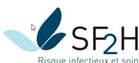
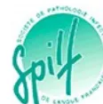
Texte validé par le Comité des Référentiels Cliniques (le 28/03/2022) et le Conseil d'Administration de la SFAR (le 31/03/2022).
Auteurs: Alice Blet, Lionel Velly, Etienne Gayat, Audrey De Jong, Hervé Quintard, Emmanuel Weiss, Philippe Cuvillon, Hugues de Courson, Daphné Michelet, Anaïs Caillard, Gérard Audibert, Julien Amour, Marc Beaussier, Matthieu Biais, Sébastien Bloc, Marie Pierre Bonnet, Laure Bonnet, Pierre Bouzat, Gilles Brezac, Claire Dahyot-Fizelier, Souhayl Dahmani, Mathilde de Queiroz, Christophe Dadure, Sophie Di Maria, Claude Ecoffey, Emmanuel Futier, Thomas Geeraerts, Anne Godier, Haïtem Jabar, Laurent Heyer, Olivier Joannes-Boyau, Delphine Kern, Olivier Langeron, Sigismond Lasocki, Yoan Launey, Anne Laffargue, Frédéric le Saché, Anne Claire Lukaszewicz, Axel Maurice-Szamburski, Nicolas Mayeur, Fabrice Michel, Vincent Minville, Sébastien Mirek, Philippe Montravers, Estelle Morau, Laurent Muller, Jane Muret, Karine Nouette-Gaulain, Jean Christophe Orban, Gilles Oriaguet, Pierre François Perrigault, Florence Plantet, Julien Pottecher, Christophe Quesnel, Vanessa Reubrecht, Bertrand Rozec, Benoît Tavernier, Benoît Veber, Francis Veyckmans, Stéphanie Ruiz, Hélène Charbonneau, Isabelle Constant, Denis Frasca, Marc-Olivier Fischer, Catherine Huraux, Matthieu Jabaudon, et Marc Garnier.
Coordonnateurs d'experts :
Marc Garnier (Paris) et Alice Blet (Lyon).
Audrey De-Jong (Montpellier), Lionel Velly (Marseille), Claire Dahyot-Fizelier (Poitier), Sophie Di Maria (Paris), Florence Fernollar (CLIN, Marseille), Beatrice Clarivet (EOH, Montpellier), Laurent Muller (Nîmes), Vanessa Reubrecht (Paris).
Emmanuel Weiss (Paris), Stéphanie Ruiz (Toulouse), Hervé Quintard (Nice), Gérard Audibert (Nancy), Yoann Launey (Rennes), Pierre-François Perrigault (Montpellier), Florence Plantet (Annecy), Benoît Veber (Rouen).
Marc Garnier (Paris), Hugues de Courson (Bordeaux), Matthieu Jabaudon (Clermont-Ferrand), Etienne Gayat (Paris), Emmanuel Futier (Clermont Ferrand), Philippe Montravers (Paris), Christophe Quesnel (Paris), Julien Amour (Massy), Matthieu Biais (bordeaux).
Philippe Cuvillon (Nîmes), Daphné Michelet (Reims), Catherine Huraux (Grenoble), Estelle Morau (Nîmes), Frédéric le Saché (Paris), Jane Muret (Paris).
Denis Frasca (Poitiers), Lionel Velly (Marseille), Sigismond Lasocki (Anger), Thomas Geeraerts (Toulouse), Sébastien Bloc (Paris), Laure Bonnet (Paris), Anne Godier (Paris), Axel Maurice-Szamburski (Marseille), Olivier Langeron (Paris), Benoit Tavernier (Lille), Marie Pierre Bonnet (Paris).
Hélène Charbonneau (Toulouse), Marc-Olivier Fischer (Caen), Marc Beaussier (Paris), Matthieu Biais (Bordeaux), Pierre Bouzat (Grenoble), Laurent Heyer (Lyon), Jean Christophe Orban (Nice), Julien Pottecher (Strasbourg), Nicolas Mayeur (Toulouse).
Alice Blet (Lyon), Anaïs Caillard (Brest), Olivier Joannes-Boyau (Bordeaux), Anne Claire Lukaszewicz (Lyon), Vincent Minville (Toulouse), Sébastien Mirek (Dijon), Bertrand Rozec (Nantes).
Isabelle Constant (Paris), Gilles Brezac (Nice), Christophe Dadure (Montpellier), Mathilde de Queiroz (Lyon), Claude Ecoffey (Rennes), Souhayl Dahmani (Paris), Haitem Jaber (Toulouse), Delphine Kern (Toulouse), Anne Laffargue (Lille), Fabrice Michel (Marseille), Karine Nouette-Gaulain (Bordeaux), Gilles Orliaget (Paris), Francis Veyckmans (Lille).
Marc Garnier (Président), Alice Blet (Secrétaire), Anaïs Caillard, Hugues de Courson, Audrey de Jong, Denis Frasca, Hélène Charbonneau, Philippe Cuvillon, Marc-Olivier Fisher, Catherine Huraux, Matthieu Jabaudon, Daphné Michelet, Stéphanie Ruiz, Emmanuel Weiss.
Pierre Albaladejo (Président), Jean-Michel Constantin (1er Vice-Président), Marc Leone (2e Vice-Président), Karine Nouette-Gaulain (Secrétaire générale), Frédéric Le Saché (Secrétaire général adjoint), Marie-Laure Cittanova (Trésorière), Isabelle Constant (Trésorière adjointe), Julien Amour, Hélène Beloeil, Valérie Billard, Marie-Pierre Bonnet, Julien Cabaton, Marion Costecalde, Laurent
Delaunay, Delphine Garrigue, Pierre Kalfon, Olivier Joannes-Boyau, Frédéric Lacroix, Olivier Langeron, Sigismond Lasocki, Jane Muret, Olivier Rontes, Nadia Smail, Paul Zetlaoui
Vous trouverez ci-dessous une version actualisée des Recommandations de Pratiques Professionnelles intitulées : « Préconisations pour l'adaptation de l'offre de soins en anesthésie-réanimation dans le contexte de pandémie de COVID-19 » (version Avril 2022) actualisées par la Société Française d'Anesthésie et de Réanimation.
Vous avez été nombreux à consulter et à appliquer dans vos centres les différentes versions de ces préconisations parues depuis la fin du mois d'avril 2020. L'évolution de la pandémie en France, plusieurs avancées scientifiques autour de la COVID-19, et notamment en termes de risque périopératoire, nous ont conduits à modifier certaines recommandations et à en proposer de nouvelles. Afin de faciliter votre lecture et de faire rapidement apparaître les modifications et ajouts importants de cette cinquième version, ceux-ci apparaissent volontairement en bleu dans l'ensemble du document (à l'exception de ceux portant sur les annexes qui peuvent être imprimées, affichées dans les services ou remises au patient).
A ce jour, la situation en France reste hétérogène. Alors que certaines régions connaissent une décroissance du pic de l'épidémie et n'ont quasiment plus de circulation du virus, d'autres ont encore des incidences stationnaires. Cette cinquième version constitue un corpus de préconisations devant être appliquées dans leur ensemble dans les zones significativement touchées par la COVID-19, tandis que dans d'autres moins touchées un retour vers des pratiques plus habituelles pourra être envisagé après validation pluridisciplinaire (anesthésistes-réanimateurs, chirurgiens, médecins interventionnels, équipes opérationnelles d'hygiène, direction, etc.) au niveau de chaque structure.
Néanmoins, la SFAR insiste pour que les règles de protection du personnel, notamment telles qu'édictées dans le champ 1, continuent à être appliquées sur l'ensemble du territoire à ce jour.
De plus, la SFAR insiste pour que tout assouplissement de pratiques par rapport à celles préconisées dans ces RPP :
Ainsi, l'objectif de cette cinquième version des RPP SFAR est d'encadrer la reprise d'activité interventionnelle au sortir du pic épidémique, sans la freiner, mais en continuant à protéger patients et soignants, à un niveau individuel et collectif pour offrir un accès à des soins de qualité à des patients dont la procédure ne peut pas (ou plus) être reportée.
Alors que la pandémie de COVID-19 se poursuit, l'organisation de l'accès aux soins doit répondre à un double impératif : 1) offrir un accès à des soins de qualité à des patients dont la procédure ne peut pas (ou plus) être reportée, et 2) limiter le risque de contamination de ces patients et des personnels soignants les prenant en charge.
Le choix des mesures spécifiques à mettre en place pour la prise en charge d'un patient dans ce contexte sera guidé par le risque lié au patient et par le risque lié à l'intervention.
Les personnes à risque de formes graves de COVID-19 selon les avis du Haut Conseil de la santé publique (avis actualisé du 29/10/2020)1 sont :
1https://www.hcsp.fr/Explore.cgi/Telecharger?NomFichier=hcspa20201029_coacdelalidefaderidefogr.pdf
Facteurs de risque de forme grave et de mortalité en cas d'infection à SARS-CoV-2, classés par niveau de risque engendré, modéré (Hazard Ratio [HR] entre 1 et 3), élevé (HR entre 3 et 5) et très élevé (HR > 5).
| Sur-risque significatif (HR entre 1 et 3) |
Sur-risque significatif élevé (HR entre 3 et 5) |
Sur-risques significatifs très élevé (HR > 5) |
|---|---|---|
|
|
|
IMC: Indice de Masse Corporelle, HbA1c: hémoglobine glyquée, BPCO: broncho-pneumopathie chronique obstructive, HTAP: hypertension artérielle pulmonaire, AVC: accident vasculaire cérébral.
Des données postérieures à la première vague ont permis de préciser la gradation de ce risque. Une analyse quasi-exhaustive des données de la population française a été menée par la CNAM et l'ANSM (regroupées en groupement d'intérêt scientifique (GIS) Epi-Phare)2. Cette étude confirme les données jusqu'à présent disponibles compilées dans les avis du HCSP. Les principaux facteurs de risque de forme grave de COVID sont :
2 Maladies chroniques, états de santé et risque d'hospitalisation et de décès hospitalier pour COVID-19 lors de la première vague de l'épidémie en France: Étude de cohorte de 66 millions de personnes.
https://ansm.sante.fr/actualites/publication-dune-vaste-etude-realisee-sur-66-millions-de-personnes-sur-les-facteurs-de-risque-associes-a-lhospitalisation-et-au-deces-pour-covid-19
Concernant le risque lié à la chirurgie, deux situations ont été identifiées :
Ainsi, la Société Française d'Anesthésie et de Réanimation (SFAR) a demandé au Comité des Référentiels Cliniques (CRC) de coordonner des Recommandations pour la Pratique Professionnelle (RPP) portant sur la prise en charge péri-opératoire des patients dans le contexte de la pandémie de COVID-19. Compte-tenu de l'évolutivité de la pandémie, ces préconisations sont toujours sujettes à modifications dans le temps en fonction de l'évolution des connaissances sur le SARS-CoV-2 et de l'épidémiologie de la pandémie. Au-delà de ces RPP, la SFAR a créé un espace documentaire dédié à la pandémie sur son site internet (https://sfar.org/covid-19/).
Les recommandations formulées concernent 7 champs :
Ces recommandations sont le résultat du travail d'un groupe d'experts réunis par la SFAR. Pour aboutir à l'élaboration de ces recommandations, la démarche a été volontairement pragmatique et logique. Dans un premier temps, le comité d'organisation a défini les questions à traiter avec les coordonnateurs, et il a ensuite désigné les experts en charge de chacune d'entre elles. Du fait de la thématique abordée, l'organisation péri-opératoire dans le contexte de la reprise de l'activité chirurgicale programmée en cours de la
pandémie de COVID-19, et de l'absence de preuve dans la littérature pour un certain nombre de questions à ce jour, il a été décidé en amont de la rédaction des recommandations d'adopter un format de Recommandations pour la Pratique Professionnelle (RPP) plutôt qu'un format de Recommandations Formalisées d'Experts (RFE). Les recommandations ont ensuite été rédigées en utilisant la terminologie des RPP « les experts suggèrent de faire » ou « les experts suggèrent de ne pas faire ». Les propositions de recommandations ont été présentées et discutées une à une. Le but n'était pas d'aboutir obligatoirement à un avis unique et convergent des experts sur l'ensemble des propositions, mais de dégager les points de concordance et les points de divergence ou d'indécision. Chaque recommandation a alors été évaluée par chacun des experts et soumise à une cotation individuelle à l'aide d'une échelle allant de 1 (désaccord complet) à 9 (accord complet). La cotation collective était établie selon une méthodologie GRADE grid. Pour valider une recommandation, au moins 70 % des experts devaient exprimer une opinion favorable, tandis que moins de 20 % d'entre eux exprimaient une opinion contraire. En l'absence de validation d'une ou de plusieurs recommandation(s), celle(s)-ci étaient reformulée(s) et, de nouveau, soumise(s) à cotation dans l'objectif d'aboutir à un consensus.
Le travail de synthèse des experts a abouti à 68 recommandations. Après un tour de cotation, un accord fort a été obtenu pour l'ensemble des recommandations et des algorithmes.
Experts : Audrey De Jong (Montpellier), Lionel Velly (Marseille), Claire Dahyot-Fizelier (Poitiers), Sophie Di Maria (Paris), Laurent Muller (Nîmes), Vanessa Reubrecht (Paris).
Relecteurs : Florence Fenollar (CLIN Marseille), Delphine Grau (EOH Montpellier).
R1.1 – Les experts suggèrent d’appliquer des mesures de protection strictes pour le personnel et les patients au cours de la pandémie COVID-19. Les mesures générales comprennent la désinfection des mains par solution hydro-alcoolique (SHA) ou le lavage de mains à l’eau et au savon si elles sont souillées, la mise en place systématique d’un masque à usage médical, préférentiellement de type II (ou IIR), correctement ajusté sur les ailes du nez et couvrant le nez et la bouche jusqu’au menton, des mesures de distanciation physique en assurant une distance d’au-moins 2 mètres entre personnels dans les moments où le port du masque n’est pas possible (pause-repas), une désinfection des surfaces et une aération des locaux de manière régulière. Ces mesures de protection seront actualisées et feront l’objet de formations régulières pour le personnel. Le patient sera également informé de l’importance du respect de ces gestes barrières.
Accord FORT
Argumentaire : Les professionnels de santé au sein des départements d’anesthésie-réanimation, unités d’anesthésie, de soins continus, de soins critiques font partie des personnes les plus à risque de contamination par la COVID-19 [1-3]. En effet, la prévalence de la séropositivité pour le SARS-CoV-2 parmi les soignants est élevée et probablement supérieure à celle de la population générale [4], ce qui témoigne du risque de contamination sur leur lieu de travail, bien que pas nécessairement lors d’activité de soins. Il est donc essentiel que des mesures de protection strictes visant à les protéger soient prises, quel que soit le statut COVID des patients qu’ils sont amenés à prendre en charge. Ces mesures de protection reposent sur le respect strict des précautions standard en hygiène [5, 6] avec une attention particulière portée à l’hygiène des mains, associée au port systématique du masque à usage médical (correctement ajusté sur les ailes du nez et sous le menton). Ces mesures de protection devront en outre être actualisées, et faire l’objet de protocoles de service et de formations pour le personnel [7]. Celles-ci sont établies tout au long du parcours du patient : consultation de pré-anesthésie, bloc opératoire, salle de surveillance post-interventionnelle, soins continus et réanimation, mais aussi en dehors des contacts avec les patients (réunions, pauses, repas, etc.). Ces mesures de protection du personnel seront mises en place directement à travers le port d’EPI par les professionnels, mais aussi indirectement à travers l’équipement du patient. Les mesures organisationnelles (information du patient, bilan pré-opératoire, modalités de consultation, modalités d’anesthésie, circuits dédiés, sélection des patients et des chirurgies), permettant également de protéger le personnel, seront détaillées dans les autres chapitres. La distanciation physique des personnels est à respecter scrupuleusement y compris en dehors de l’activité de soins (staff, pauses, repas...) : se placer et rester à au moins 2 mètres de distance les uns des autres, dans les moments où le port du masque n’est pas possible, et réaliser une désinfection régulière des surfaces. Si le risque de transmission du virus SARS-CoV-2 par aérosols en milieu de soins est avéré, la part de cette transmission par aérosols n’est pas à ce
jour, quantifiée par des études scientifiques probantes (elle a été décrite principalement par des modélisations et études expérimentales). Il est cependant recommandé d'aérer de manière régulière les locaux [8].
REFERENCES:
ABSENCE DE RECOMMANDATION – A ce jour, il est impossible de préconiser une modification des mesures de protection des personnels ou des patients détaillées dans la R1.1 (et dans les recommandations suivantes du champ 1), chez les membres du personnels et les patients ayant été vaccinés, y compris avec un schéma vaccinal complet, du fait de l'absence de données sur le risque pour le patient vacciné et sur le risque de transmission du virus au personnel vacciné dans le contexte péri-opératoire.
Argumentaire : A ce jour, aucune donnée n'existe sur le risque péri-opératoire en lien avec le SARS-CoV-2 chez les patients vaccinés contre la COVID-19. Il n'existe pas non plus de donnée fiable sur les risques de contamination professionnelle du personnel vacciné, volontiers exposé plus fréquemment et à plus fort inoculum au SARS-CoV-2 que la population générale (notamment lors de l'intubation orotrachéale). De fait, à ce jour, il n'est pas possible de préconiser un allégement des mesures de protection (incluant le port des EPI, le respect de la distanciation physique, et l'organisation et le nettoyage des lieux de travail) pour les personnels au contact de patients vaccinés, y compris si les membres du personnel sont eux même vaccinés. De futures recherches sont nécessaires pour déterminer si la vaccination des patients et des personnels protège à la fois les patients (qu'ils soient eux-mêmes vaccinés ou non) pris en charge sur les plateaux interventionnels ou dans les unités de soins critiques, et les membres du personnel d'une contamination professionnelle. Les mesures de protection s'appliquant à l'anesthésie-réanimation et médecine péri-opératoire préconisées dans ce champ 1 ne pourront éventuellement être adaptées et simplifiées en fonction du statut vaccinal, qu'une fois ces données établies.
R1.2 – Les experts suggèrent que tous les patients venant en consultation effectuent une désinfection des mains par SHA et mettent en place un masque à usage médical (norme NF EN
14683:2019), préférentiellement de type II (ou IIR), dès leur entrée dans la structure hospitalière, y compris les enfants, pour lesquels il faut prévoir des masques de taille adaptée.
Accord FORT
R1.3 – Lors de la consultation de pré-anesthésie, les experts suggèrent que les professionnels de santé appliquent les précautions standard, en réalisant un geste d’hygiène des mains par friction avec un SHA (ou par lavage à l’eau et au savon si les mains sont souillées) avant et après chaque contact avec un patient ou son environnement, en portant un masque à usage médical, préférentiellement de type FFP2 (ou équivalent type N95 ou KN95), et en portant une protection oculaire (lunettes de protection occlusives ou écran facial) pour tout examen clinique à risque de projection de liquides biologiques (examen bucco-dentaire ou ORL par exemple) nécessitant un retrait du masque par le patient.
Accord FORT
R1.4 – Les experts suggèrent d’appliquer les mesures de protection universelles suivantes pour l’organisation des consultations :
Accord FORT
Argumentaire : En cette période de pandémie à COVID-19 tout patient et tout professionnel peut potentiellement être contaminé ; les mesures de protection des autres patients et du personnel reposent sur une désinfection des mains et le port d’un masque à usage médical préférentiellement de type II (ou IIR) par tous, patients, éventuels accompagnants et professionnels de santé [1-3]. Un masque II ou IIR minimisera la dispersion de grosses gouttelettes respiratoires, ce qui protégera le personnel contre les transmissions par
gouttelettes et par contact [4]. S'il est porté par le personnel, un masque II ou IIR protégera contre la transmission des gouttelettes dans un rayon de 1 à 2 mètres du patient. Quatre études randomisées ont comparé l'efficacité des masques FFP2 et des masques à usage médical chez des personnels soignants lors de procédures non-aérosolisantes [5-8]. La méta-analyse incluant ces études ne retrouve aucune différence en termes de survenue d'infections virales respiratoires (OR 1,06 ; IC95% 0,90-1,25) entre les deux types de masques [9]. Un seul essai a spécifiquement évalué les coronavirus (SARS-CoV-1) et n'a trouvé aucune différence entre les deux types de masques lors de procédures non-aérosolisantes [6].
REFERENCES:
R1.5 – Les experts suggèrent que les professionnels de santé participant à la gestion des voies aériennes (intubation et/ou extubation, mise en place et/ou retrait d'un dispositif supraglottique...), ou à même de le faire en situation de recours portent lors de ces procédures, quel que soit le statut COVID-19 du patient :
Accord FORT
R1.6 – Les experts suggèrent que le port d'une surblouse suive les indications des précautions standard (soins souillant ou mouillant), sans rapport avec le statut COVID-19 du patient. Dans cette indication, la surblouse doit alors être imperméable (surblouse + tablier imperméable à usage unique, ou casaque chirurgicale étanche).
Accord FORT
R1.7 – Les experts suggèrent que le déshabillage après la prise en charge d'un patient COVID-19, se fasse dans la salle d'intervention, au plus près de la porte :
Accord FORT
R1.8 – Les experts suggèrent que quel que soit le statut COVID-19 du patient, seul le personnel essentiel à la gestion des voies aériennes soit présent en salle d'intervention lors de ces procédures.
Accord FORT
Argumentaire : La gestion des voies aériennes est particulièrement à risque de contamination pour les personnels. Ainsi, des mesures de protection strictes doivent être appliquées lors des manœuvres aérosolisantes que constituent la ventilation au masque, l'intubation, l'aspiration endotrachéale et l'extubation [1]. Le port des masques FFP (« filtering facepiece particles ») de type 2 (« FFP2 » ou équivalent type N95 ou KN95) est préconisé par la société française d'hygiène hospitalière (SF2H) et la société de pathologie infectieuse de langue française (SPILF) pour le personnel soignant qui réalisent des manœuvres au niveau de la sphère respiratoire [2]. Ces masques filtrants sont destinés à protéger celui qui le porte contre l'inhalation de gouttelettes et de particules en suspension dans l'air. Le port de ce type de masque est plus contraignant (inconfort thermique, résistance respiratoire) que celui d'un masque à usage médical. Ils ont l'avantage de filtrer au moins 94 % des aérosols (fuite totale vers l'intérieur < 8%) et d'être plus efficace que les masques à usage médical de type II ou IIR concernant les particules <5 µm [3]. Cependant, un masque FFP2 mal adapté ou mal ajusté ne protège pas plus qu'un masque à usage médical. Un test d'étanchéité (fit check) doit être réalisé de façon systématique (vidéo SFAR). De même une barbe (même naissante) réduit l'étanchéité du masque au visage et diminue son efficacité globale.
En cas de pénurie de FFP2, les masques FFP3 filtrant au moins 99 % des aérosols (fuite totale vers l'intérieur <2%) ont été proposés. Cependant avec ces masques l'air est le plus souvent expiré à travers une soupape (ou valve expiratoire) sans être filtré et est susceptible de contaminer l'environnement. Seuls les masques FFP3 comportant un dispositif de filtration sur la valve expiratoire pourraient être utilisés dans cette indication.
Une méta-analyse réalisée à partir d'études observationnelles a suggéré qu'une protection des yeux permettait de prévenir les infections par virus respiratoires [4]. En effet, les gouttelettes et les liquides organiques infectieux peuvent également facilement contaminer l'épithélium conjonctival humain [5] et entraîner ensuite une infection respiratoire [6]. Le fait que les yeux non protégés augmentent le risque de transmission a été mis en évidence avec les coronavirus [7].
REFERENCES :[1] Bowdle A, Jelacic S, Shishido S, Munoz-Price LS. Infection prevention precautions for routine anesthesia care during the SARS-CoV-2 pandemic. Anesth Analg. 2020 Nov;131(5):1342-1354.
[2] Avis de la SF2H et SPILF du 04/03/2020 relatif aux indications du port des masques chirurgicaux et des appareils de protection respiratoire de type FFP2 pour les professionnels de santé.
[3] Milton DK, Fabian MP, Cowling BJ, Grantham ML, McDevitt JJ, (2013) Influenza virus aerosols in human exhaled breath: particle size, culturability, and effect of surgical masks. PLoS Pathog 9: e1003205
[4] Dai X. Peking University Hospital Wang Guangfa disclosed treatment status on Weibo and suspected infection without wearing goggles. Jan 22, 2020. http://www.bjnews.com.cn/news/2020/01/23/678189.html (accessed Jan 24, 2020).
[5] Chu DK, Akl EA, Duda S, Solo K, Yaacoub S, Schünemann HJ; COVID-19 Systematic Urgent Review Group Effort (SURGE) study authors. Physical distancing, face masks, and eye protection to prevent person-to-person transmission of SARS-CoV-2 and COVID-19: a systematic review and meta-analysis. Lancet. 2020 395(10242):1973-1987
[6] Belser JA, Rota PA, Tumpey TM. Ocular tropism of respiratory viruses. Microbiol Mol Biol Rev 2013; 77:144–56.
[7] Seah I, Agrawal R. Can the Coronavirus Disease 2019 (COVID-19) Affect the Eyes? A Review of Coronaviruses and Ocular Implications in Humans and Animals, Ocular Immunology and Inflammation, 28:3, 391-395.
D. En salle de surveillance post-interventionnelle (SSPI)R1.9 – Les experts suggèrent que les soignants et les patients portent en permanence un masque à usage médical, préférentiellement de type II (ou IIR).
Accord FORT
R1.10 – Les experts suggèrent que, lors d'une procédure d'extubation chez tout patient, tout soignant porte :
Accord FORT
Argumentaire : Les gouttelettes respiratoires, sont les principales sources de contamination des personnels soignants [1,2]. Lors des procédures à risque d'aérosolisation, l'intérêt du masque FFP2 et d'une protection de type blouse étanche ou association blouse conventionnelle et tablier plastique font l'objet d'un consensus [3,4]. Une méta-analyse réalisée à partir d'études observationnelles a suggéré qu'une protection des yeux permettait de prévenir les infections par virus respiratoires [5]. Le nombre de patients asymptomatiques porteurs du virus est important [6] et justifie une protection systématique des soignants lors des procédures à risque [3-9].
REFERENCES:[1] Bowdle A, Jelacic S, Shishido S, Munoz-Price LS. Infection Prevention Precautions for Routine Anesthesia Care During the SARS-CoV-2 Pandemic. Anesth Analg. 2020 Nov;131(5):1342-1354.
[2] The Lancet. COVID-19: protecting health-care workers. Lancet. 2020;395(10228):922.
[3] Avis de la SF2H et SPILF du 04/03/2020 relatif aux indications du port des masques chirurgicaux et des appareils de protection respiratoire de type FFP2 pour les professionnels de santé.
[4] Recommandations d'experts portant sur la prise en charge en réanimation des patients en période d'épidémie à SARS-CoV2. https://sfar.org/recommendations-dexperts-portant-sur-la-prise-en-charge-en-reanimation-des-patients-en-periode-depidemie-a-sars-cov2/
[5] Chu DK, Akl EA, Duda S, Solo K, Yaacoub S, Schünemann HJ; COVID-19 Systematic Urgent Review Group Effort (SURGE) study
authors. Physical distancing, face masks, and eye protection to prevent person-to-person transmission of SARS-CoV-2 and COVID-19: a systematic review and meta-analysis. Lancet. 2020 395(10242):1973-1987
[6] Bai et al. Presumed asymptomatic carrier transmission of COVID 19. JAMA. 2020; 323(14):1406-1407.
[7] Q&A How to protect yourself when travelling during the coronavirus (COVID-2019) outbreak. World Health Organization YouTube page. Accessed March 20, 2020. https://www.youtube.com/watch?v=0KBvReECRrl&feature=youtu.be&t=1110
[8] Travelers from countries with widespread sustained (ongoing) transmission arriving in the United States. Centers for Disease Control and Prevention website. Accessed March 13, 2020. https://www.cdc.gov/coronavirus/2019-ncov/travelers/after-travel-precautions.html
[9] Galanis P, Vraka I, Fragkou D, Bilali A, Kaitelidou D. Seroprevalence of SARS-CoV-2 antibodies and associated factors in health care workers: a systematic review and meta-analysis. J Hosp Infect. 2021;108:120-134.
R1.11 – Les experts suggèrent que dans les espaces de circulation, les soignants portent en permanence un masque à usage médical, préférentiellement de type II (ou IIR). Une attention particulière doit être portée aux mesures barrières lors des relèves médicales et paramédicales et des pauses (ouverture de salles supplémentaires pour les repas avec limitation du nombre de personnes par pièce, respect de la distanciation physique entre les personnes lorsqu'elles ne portent pas le masque, aération régulière de ces locaux, etc.).
Accord FORT
R1.12 – Les experts suggèrent de réaliser un test par RT-PCR SARS-CoV-2 chez tous les patients entrant en soins critiques si un résultat de PCR datant de moins de 72h n'est pas disponible, en privilégiant un prélèvement trachéo-bronchique chez les patients intubés si possible, afin de limiter le risque de transmission aux soignants et les contaminations nosocomiales.
Accord FORT
R1.13.1 – Les experts suggèrent que, lors d'une procédure à risque d'aérosolisation chez un patient, quel que soit son statut COVID-19, tout soignant porte un masque FFP2, une coiffe, et une protection oculaire (lunettes de protection occlusives ou écran facial). Les procédures à risque d'aérosolisation sont :
Accord FORT
R1.13.2 – Les experts suggèrent que le port de gants non-stériles et d'une surblouse imperméable respecte les indications des précautions standard, sans rapport avec le statut COVID-19 du patient. Ces indications sont le contact ou risque de contact avec du sang ou des liquides biologiques, une muqueuse ou une plaie pour les gants; et les soins souillant ou mouillant pour la surblouse étanche (surblouse manche longue + tablier imperméable à usage unique ou casaque chirurgicale étanche).
Accord FORT
R1.14 – Lorsque le statut COVID-19 du patient est inconnu, les experts suggèrent de privilégier les systèmes d'aspiration trachéale en système clos. En cas d'indisponibilité de ce système, il est nécessaire d'interrompre la ventilation du patient pendant l'aspiration, idéalement avec l'intervention d'un second opérateur.
Accord FORT
Argumentaire : Les gouttelettes respiratoires, sont les principales sources de contamination des personnels soignants [1]. Lors des procédures à risque d'aérosolisation chez les patients COVID-19 confirmés, l'intérêt du masque FFP2 fait l'objet d'un consensus [2,3]. Or, le nombre de patients asymptomatiques ou présymptomatiques porteurs du virus pouvant être important [4,5], une protection systématique des soignants lors des procédures à risque est justifiée chez les patients dont le statut COVID-19 n'est pas encore connu [2-8]. La liste des procédures à risque d'aérosolisation, rappelées ci-dessus, a été édictée par le HCSP [9]. En dehors des soins aérosolisants, le masque FFP2 (ou équivalent type N95 ou KN95) n'a pas montré sa supériorité comparativement au masque à usage médical de type II, mais en cas de soins auprès du patient, le port d'un écran facial ou de lunettes de protection occlusives le cas échéant et d'un tablier semblent être une bonne pratique [10]. En effet, une méta-analyse réalisée à partir d'études observationnelles a suggéré qu'une protection des yeux permettait de prévenir les infections par virus respiratoires [11]. Les salles de pause et de réunion sont des lieux de transmission particulièrement importante, où il convient d'appliquer le plus rigoureusement possible les gestes barrières [12].
REFERENCES :
SARS-CoV-2, in Health Care and Community Settings. Ann Intern Med. 2020 173(7):542-555
[11] Chu DK, Akl EA, Duda S, Solo K, Yaacoub S, Schünemann HJ; COVID-19 Systematic Urgent Review Group Effort (SURGE) study authors. Physical distancing, face masks, and eye protection to prevent person-to-person transmission of SARS-CoV-2 and COVID-19: a systematic review and meta-analysis. Lancet. 2020 395(10242):1973-1987
[12] Bielicki JA, Duval X, Gobat N, Goossens H, Koopmans M, Tacconelli E, van der Werf S. Monitoring approaches for health-care workers during the COVID-19 pandemic. Lancet Infect Dis. 2020 Oct;20(10):e261-e267.
R1.15 – Pour la consultation de pré-anesthésie des enfants, les experts suggèrent de n’accepter la présence que d’un seul parent ou responsable légal accompagnant par enfant, sauf cas particulier. Cet accompagnant devra porter un masque à usage médical.
Accord FORT
R1.16 – Les experts suggèrent que tous les personnels d’anesthésie à toutes les étapes de la prise en charge portent un masque à usage médical préférentiellement de type II (ou IIR). Les experts suggèrent également, conformément aux précautions standard, le port d’une protection oculaire (lunettes de protection occlusives ou écran facial) et d’une protection de leur tenue en cas de risque de projection ou de contact avec des liquides biologiques, et le port d’une paire de gants en cas de contact ou risque de contact avec du sang ou des liquides biologiques, une muqueuse ou une plaie.
Accord FORT
R1.17 – Chez l’enfant réveillé en SSPI, en cas de manœuvres sur les voies aériennes, quel que soit le statut COVID de l’enfant, les experts suggèrent que les professionnels de santé portent en plus un masque FFP2 (dont la mise en place sera systématiquement accompagnée de la vérification de son étanchéité (« fit-check »)).
Accord FORT
Argumentaire : En période de pandémie de COVID-19, des mesures de protection renforcées vis-à-vis de la population pédiatrique sont justifiées en raison de l’existence d’une proportion non négligeable d’enfants possiblement COVID+ asymptomatiques (pouvant atteindre 16% suivant les séries) et d’une probable difficulté d’observance des mesures de distanciation sociale et de protection (difficulté du port continu du masque à usage médical) par les enfants [1-3]. Ces constats impliquent le respect pour la prise en charge des enfants, comme des adultes, de précautions standard associant le port systématique d’un masque à usage médical préférentiellement de type II (ou IIR) et la réalisation rigoureuse et fréquente de l’hygiène des mains, , et, pour les personnels d’anesthésie exposés à un risque de projection ou de contact avec des liquides biologiques, surtout pour l’examen rapproché de la cavité buccale en consultation d’anesthésie d’une protection oculaire, d’une protection de la tenue professionnelle, et de gants conformément aux précautions standard [4].
REFERENCES:Experts : Emmanuel Weiss (Paris), Stéphanie Ruiz (Toulouse), Hervé Quintard (Nice), Florence Plantet (Annecy), Gérard Audibert (Nancy), Pierre-François Perrigault (Montpellier), Benoit Veber (Rouen), Yoann Launey (Rennes)
R2.1 – Chez les patients asymptomatiques, en période de pandémie de COVID-19, les experts suggèrent d'évaluer le rapport bénéfice/risque de l'intervention en fonction des critères liés au patient, à la pathologie et à la procédure (Tableau 1).
Accord FORT
Argumentaire : La circulation du SARS-CoV-2 dans la population et l'existence de porteurs asymptomatiques affectent le rapport bénéfice/risque de la réalisation d'un acte chirurgical programmé pendant la pandémie de COVID-19 et impose une évaluation rigoureuse. Cette réflexion doit intégrer trois types de critères liés au patient, à la pathologie et à la procédure. Les données de la littérature individualisent plusieurs facteurs de risque de formes graves de COVID-19 liés au patient potentiellement associés à une majoration des complications postopératoires. La liste actualisée de ces facteurs de risque est rappelée dans le préambule de ces recommandations. Parmi celles-ci on peut souligner : la classe ASA, l'obésité, l'âge ans, la présence d'une fragilité évaluée par le score de fragilité clinique [1] (Annexe 1), la présence sous-jacente d'une pathologie respiratoire (asthme, BPCO, mucoviscidose) ou cardiovasculaire (HTA, coronaropathie et insuffisance cardiaque chronique), le syndrome obstructif d'apnées du sommeil, le diabète, l'immunodépression et [2-4]. Une infection à SARS-CoV2 datant de moins de 7 semaines est par ailleurs associée à une augmentation de la mortalité et des complications postopératoires [5]. L'ensemble de ces facteurs ont été établis sur la base de données obtenues chez des patients infectés par des souches autres que le variant omicron pour lequel aucune donnée n'est à ce jour disponible. De plus, cette augmentation du risque péri-opératoire est cependant contrebalancée par le potentiel effet délétère de l'annulation ou du report de l'intervention pour le patient [6, 7]. La perte de chance en l'absence d'intervention doit être estimée et l'efficacité et la disponibilité d'alternatives thérapeutiques (curatives ou d'attente) explorées. Enfin, deux types de facteurs liés à la procédure chirurgicale doivent être pris en compte : l'utilisation des ressources et le risque de transmission du SARS-CoV-2 à l'équipe soignante. Le temps opératoire et la durée prévue du séjour donnent un aperçu du personnel et des ressources hospitalières nécessaires. Pour chaque intervention, le recours prévisible à une prise en charge postopératoire dans un secteur de soins critiques doit être anticipé afin d'adapter l'activité chirurgicale à l'offre disponible à l'instant. Les besoins transfusionnels doivent également être évalués en raison des difficultés d'accès du public aux points de collecte de don du sang. Le nombre de personnel nécessaire doit être pris en compte car il majoré le risque de contamination de l'équipe soignante compte tenu de l'impossibilité de respecter les recommandations de distanciation en per-opératoire. Enfin, le risque lié au type d'anesthésie et au type de chirurgie doit être évalué. La gestion des voies aériennes supérieures a été identifiée comme évènement à haut risque pour la transmission potentielle du virus lié à l'aérosolisation des sécrétions des voies aériennes persistante plusieurs minutes après la procédure [8, 9]. Ce même risque est observé pour les interventions des voies aérodigestives supérieures et du thorax. Enfin, le risque lié au site de chirurgie doit tenir compte de la probabilité de ventilation
mécanique postopératoire dont les conséquences pourraient être aggravées dans le cadre d'une infection, voire d'un portage, à SARS-CoV-2. La vaccination en préopératoire réduit le risque de forme grave d'infection à SARS-CoV2. Les données actuelles de la littérature sont encore insuffisantes pour se positionner quant au délai optimal entre la vaccination et la chirurgie. Il paraît cependant souhaitable de respecter un délai minimal de 72 heures pour ne pas confondre les effets secondaires éventuels de la vaccination avec une complication postopératoire.
REFERENCES :
R2.2 – Chez un patient présentant une PCR positive et devant bénéficier d'une chirurgie programmée, le délai de report de cette chirurgie doit tenir compte du statut vaccinal, du statut immunocompétent, de la symptomatologie respiratoire engendrée par l'infection à SARS-CoV-2 et du rapport bénéfice-risque du report de l'intervention (Cf. critères du Tableau 2). Du fait des évolutions de la pandémie, et à l'heure des variants Omicron, une proposition d'adaptation du délai de report est présentée dans l'arbre décisionnel en Annexe 1.
Accord FORT
Argumentaire : Les données de l'étude multicentrique internationale COVIDSurg [1] avaient conduit la SFAR à préconiser un report de toute chirurgie programmée chez un patient ayant une PCR SARS-CoV-2 préopératoire positive d'au moins 6 semaines révolues, si la balance bénéfice-risque de ce report restait favorable après avoir tenu compte de l'indication opératoire. A notre connaissance, aucune nouvelle étude de grande ampleur réalisée chez des patients vaccinés contre la COVID et bénéficiant d'une chirurgie moins de 7 semaines après une PCR préopératoire positive n'a été publiée. Il n'est donc pas possible d'émettre une recommandation formelle sur la modification du délai de report d'une chirurgie après PCR préopératoire positive.
Toutefois, deux séries américaines apportent des résultats complémentaires. La première, portant sur près de 5500 patients suivis entre mars 2020 et mai 2021 [2], confirme que les patients opérés précocement après une COVID-19 sont plus à risque de complications postopératoires (respiratoires et non respiratoires). Cette série rapporte un risque augmenté
de 3 à 6 fois en fonction de la complication respiratoire considérée chez les patients opérés entre 0 et 4 semaines après le diagnostic, et un sur-risque moins important, essentiellement marqué par le risque de pneumonie post-opératoire, chez les patients opérés de 4 à 8 semaines après la COVID-19. Il n'existait pas de sur-risque de complication postopératoire après 8 semaines de report.
La seconde, portant sur 778 patients suivis entre mars et juin 2020 [3], rapporte que la survenue d'une détresse respiratoire postopératoire chez les patients opérés avec une PCR SARS-CoV-2 positive était plus fréquente chez les patients symptomatiques (26% des patients) que chez les patients asymptomatiques (9%).
Aucune de ces études ne s'est spécifiquement intéressée aux populations de patients disposant d'un schéma vaccinal complet et/ou infectés par le variant omicron. Par conséquent, il apparaît primordial d'évaluer de manière multidisciplinaire le rapport bénéfice-risque lié au report de l'intervention.
Les infections à SARS-CoV-2 étant plus fréquemment asymptomatiques ou pauci-symptomatiques chez les sujets vaccinés, la réduction du délai de report de la chirurgie programmée de 6 semaines révolues à 4 semaines révolues (i.e. reprogrammation à partir de la 5e semaine) après un test PCR positif peut probablement s'envisager sans sur-risque significatif chez les patients immunocompétents asymptomatiques ou pauci-symptomatiques sans symptômes respiratoires (symptômes ORL isolés, fièvre isolée de résolution rapide, céphalées isolées) ayant eu un test PCR ou antigénique positif et présentant un schéma vaccinal complet contre le SARS-CoV-2. En attendant le résultat d'études conduites spécifiquement dans le contexte péri-opératoire chez les patients vaccinés contre la COVID-19, il paraît prudent de maintenir un délai de report de 6 semaines révolues (i.e. reprogrammation à partir de la 7e semaine) chez les patients vaccinés ayant eu une COVID-19 symptomatique au niveau respiratoire (toux, dyspnée, polypnée), chez les patient immunodéprimés à risque de ne pas développer d'anticorps après la vaccination, et chez les patients non-vaccinés.
Ces préconisations seront réajustées si nécessaire dès que de nouvelles données spécifiques au contexte péri-opératoire seront disponibles, prenant en compte la large couverture vaccinale actuelle, et les caractéristiques épidémiques (contagiosité, sévérité des formes cliniques, etc.) propres aux nouveaux variants de SARS-CoV-2.
R2.3 – Les experts suggèrent d'informer, oralement et par écrit, le patient et/ou ses représentants légaux des conditions particulières liées à la pandémie de COVID-19, notamment de l'évaluation du rapport bénéfice/risque lié à l'intervention et du circuit envisagé au regard de sa pathologie. Le traçage dans le dossier du patient de cette information est indispensable (Annexes 2, 3 et 4).
Argumentaire : Lors de la consultation de pré-anesthésie, il faut donner au patient et/ou à son représentant légal une information détaillée sur la stratégie péri-opératoire décidée par l'institution dans le contexte COVID-19, vis-à-vis de son cas. Le message doit être clair, objectif en fonction des données actuellement disponibles en s'efforçant d'être rassurant pour le patient et/ou son représentant légal. Ce message doit être donné oralement lors de la consultation mais également diffusé sous forme d'un document établi et validé par chaque structure et qui pourra être remis au patient et/ou son représentant légal lors de la consultation chirurgicale ou de pré-anesthésie. Cette information doit apparaître et être tracée dans le dossier médical. En annexe, en fonction des données actuelles, nous proposons des exemples de documents types (Annexes 2 à 4). En cas d'annulation ou de report de l'intervention, il est également essentiel de garder le contact avec le patient, très souvent par l'intermédiaire des équipes chirurgicales, afin de réévaluer les alternatives possibles et la faisabilité du geste à distance en fonction de l'évolution des conditions. Si c'est du fait du patient, le report ou l'annulation par le patient de l'intervention chirurgicale doivent être tracés dans le dossier médical.
Annexe 1. Délai de report d'une intervention programmée après test de dépistage préopératoire positif à SARS-CoV-2.
graph TD
A[Discussion du rapport bénéfice-risque lié au report de l'intervention]
B[Test dépistage SARS-CoV-2 préopératoire positif]
C[Schéma vaccinal complet et patient immunocompétent ?]
D[COVID-19 symptomatique au niveau respiratoire (toux, dyspnée, polypnée) OU nécessitant une hospitalisation?]
E[Report de 4 semaines]
F[Report de 6 semaines]
G[Les durées de report sont des durées révolues, i.e. reprogrammation à partir de la 5e ou 7e semaine]
B --> C
C -- NON --> F
C -- OUI --> D
D -- OUI --> F
D -- NON --> E
Les durées de report sont des durées révolues, i.e. reprogrammation à partir de la 5e ou 7e semaine
Tableau 1. Critères permettant d'évaluer le rapport bénéfice/risque d'une intervention chirurgicale programmée chez un patient en période de pandémie de COVID-19. Mise à jour d'avril 2022.
| Critères | |
|---|---|
| Liés au patient |
Score ASA Obésité (IMC supérieur à 35 kg/m2) Âge (≥65 ans) Score de fragilité clinique Présence d'une pathologie pulmonaire ou cardio-vasculaire sous-jacente Syndrome d'Apnée du sommeil Diabète Immunodépression Infection à SARS-CoV2 récente Schéma vaccinal complet |
| Liés à la pathologie |
Alternatives thérapeutiques possibles Perte de chance en l'absence d'intervention |
| Liés à la procédure |
Durée opératoire Durée de séjour Nécessité de soins critiques Besoins transfusionnels Chirurgie à risque d'aérosolisation |
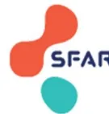
The logo for SFAR (Société Française d'Anesthésie et Réanimation) is located in the top right corner. It consists of three overlapping circles in red, orange, and teal, with the letters 'SFAR' in a bold, sans-serif font to the right of the circles.Madame, Monsieur,
Vous allez bénéficier d'une intervention dans notre établissement. En cette période de pandémie, l'établissement, comme beaucoup d'autres a pris, et/ou continue, de prendre en charge des patients infectés par le coronavirus responsable de la pandémie de COVID-19.
Depuis le début de la pandémie, nous avons pris des mesures très strictes destinées à isoler les patients non contaminés des malades infectés ou fortement suspects de l'être. Ces mesures, décidées selon les directives des autorités sanitaires et des sociétés savantes nous ont permis de maintenir notre activité chirurgicale pour les patients les plus urgents.
Une stratégie d'isolement et de séparation des patients infectés est mise en œuvre au sein de l'établissement. Les secteurs d'hospitalisation, le parcours des patients, les personnels affectés aux différentes activités sont individualisés. Soyez certains que toutes les précautions nécessaires sont prises pour éviter une contamination pendant votre hospitalisation, en particulier par la mise en place de mesures barrières strictes. L'objectif de ces mesures est de sécuriser au maximum votre parcours dans l'établissement.
Nous vous demandons, et ceci est essentiel pour votre sécurité et celle de tous, de nous signaler avant votre entrée dans l'établissement tout signe pouvant faire suspecter une infection à coronavirus (notamment en complétant le questionnaire associé de ce courrier). En dehors de l'urgence, il est possible que l'équipe médico-chirurgicale soit amenée à reprogrammer votre intervention si vous avez présenté des symptômes du COVID ou une PCR positive. En effet, des études ont montré qu'il existait un risque augmenté de complications respiratoires et non respiratoires (avec un risque de décès) si l'intervention est maintenue, même en l'absence de symptômes. Le délai de report de l'intervention dépend du statut vaccinal, du statut immunocompétent, de la symptomatologie respiratoire au moment de l'infection COVID et du rapport entre le bénéfice de maintenir l'intervention et le risque d'une complication liée au COVID. Ce délai de report de situe entre 4 semaines pleines (soit chirurgie possible à la 5e semaine) et 6 semaines pleines (soit chirurgie possible à la 7e semaine) selon tous les éléments décrits ci-dessus.
Il faut également savoir que si vous ne présentez pas les symptômes du COVID et que la PCR COVID est négative, ceci n'élimine pas formellement que vous soyez infecté ou en phase d'incubation de la COVID-19. Si cette PCR est positive, votre intervention pourra être reportée avec les mêmes règles que celles décrites ci-dessus, même si vous êtes déjà hospitalisé. Au cours de votre opération, tout symptôme qui vous paraîtrait anormal devra nous être signalé. Au moindre doute, pendant votre hospitalisation, des examens complémentaires seront pratiqués pour éliminer un début de pneumonie virale.
Malgré toutes ces précautions, une éventuelle infection peut toujours se déclarer pendant votre hospitalisation ou après votre retour à domicile. Il est essentiel donc que vous respectiez avant, pendant et après votre hospitalisation les gestes barrières recommandés par les autorités sanitaires afin de limiter au maximum le risque de contamination. Si malgré toutes ces précautions, vous devez déclarer une infection au COVID, soyez certain que vous bénéficierez alors d'une prise en charge rapide, spécifique et appropriée à votre situation.
Soyez enfin assurés que tout sera fait au sein de l'établissement pour que votre prise en charge soit le moins possible affectée par la situation de crise sanitaire que nous traversons.
A ....., le .....
Signature chef du service d'anesthésie – réanimation
ou
L'équipe d'anesthésie – réanimation
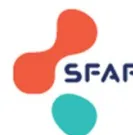
The logo for SFAR (Société Française d'Anesthésie-Réanimation) is located in the top right corner. It consists of three overlapping circles in red, orange, and teal, with the letters 'SFAR' in blue to the right.Madame, Monsieur,
Votre enfant va bénéficier d'une intervention qui nécessite une anesthésie générale et/ou locorégionale dans notre établissement. La période particulière de pandémie de COVID-19 que nous vivons entraîne des changements d'organisation dans la prise en charge péri-opératoire de votre enfant. Dans ces circonstances, notre équipe fait en sorte de garantir au mieux la qualité de la prise en charge.
Depuis le début de la pandémie, nous avons pris une série de mesures destinées à séparer les patients non-COVID des malades infectés. Ces mesures, décidées selon les directives des autorités sanitaires et des sociétés savantes nous ont permis de maintenir notre activité chirurgicale pour les patients les plus urgents en prévenant les risques de contamination. Les secteurs d'hospitalisation, le parcours des patients, les personnels affectés aux différentes activités sont ainsi individualisés. Soyez certains que toutes les précautions nécessaires sont prises pour éviter une contamination pendant l'hospitalisation de votre enfant au sein de l'établissement. L'objectif de ces mesures est de sécuriser au maximum le parcours de votre enfant, ainsi que le vôtre.
Il est donc essentiel pour la sécurité de votre enfant, la vôtre et celle de tous, de nous signaler avant votre entrée dans l'établissement tout élément anormal pouvant faire suspecter une infection à coronavirus : toux, fièvre, perte du goût et/ou de l'odorat, fatigue anormale, douleurs musculaires, maux de tête, lésions cutanées récentes chez votre enfant ou chez un membre de son entourage. Une PCR COVID de dépistage sera prescrite par le médecin anesthésiste. Malgré toutes ces précautions une éventuelle infection peut se déclarer pendant l'hospitalisation de votre enfant ou après son retour à domicile. Ainsi tout symptôme qui vous paraîtrait anormal devra nous être signalé.
En dehors de l'urgence, si votre enfant présente une infection à COVID-19 avec des symptômes avant l'opération, ou une PCR préopératoire positive, l'intervention programmée pourra être reportée entre 5 et 7 semaines selon son statut vaccinal, son statut d'immunodépression, les signes de COVID qu'il a présentés, et la chirurgie. Le délai du report sera décidé de façon conjointe entre l'équipe d'anesthésie-réanimation et l'équipe chirurgicale. En effet, les risques de complications post-opératoires respiratoires et non respiratoires sont augmentés après une infection par le COVID, avec ou sans symptômes.
Pendant le séjour de votre enfant, un seul accompagnant pourra venir le voir. Si l'un des membres de l'entourage présente des symptômes de la COVID-19, il ne pourra venir rendre visite à votre enfant. Les bénéfices et les risques seront évalués avant toute autorisation de visite, afin de diminuer les risques de contamination. L'accueil de votre enfant s'effectuera en respectant les mesures barrière préconisées depuis le début de la crise sanitaire aussi bien pour l'équipe soignante que pour vous-même et si cela est possible pour votre enfant, par le port d'un masque à usage médical en consultation et au bloc opératoire. Si votre enfant est suspect ou confirmé COVID, son réveil s'effectuera en salle d'intervention et non en salle de réveil. Vous rejoindrez alors votre enfant dans sa chambre.
Au cas où vous vous poseriez d'autres questions ou souhaiteriez des précisions, n'hésitez pas à nous le faire savoir à tout moment. Votre enfant doit être également informé et l'équipe d'anesthésie-réanimation est à sa disposition pour en parler.
A ..... , le .....
Signature chef du service d'anesthésie – réanimation
ou
L'équipe d'anesthésie – réanimation
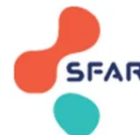
The logo for SFAR (Service de l'Assurance et de la Réassurance) is located in the top right corner. It consists of three overlapping circles in orange, red, and teal, with the letters 'SFAR' in blue to the right of the circles.Bonjour,
Tu vas bénéficier d'une anesthésie à l'occasion de ton opération chirurgicale dans notre hôpital. Comme tu as pu le constater, l'organisation à l'hôpital a dû changer du fait de la COVID-19. Sache que toute l'équipe s'engage pour que ta prise en charge se déroule en toute sécurité.
Pour ceci, certaines mesures ont été prises :
N'hésite pas à en parler avec tes parents et avec l'équipe qui te prendra en charge.
Et n'hésite pas à nous poser des questions !
A ....., le .....
Experts : Marc Garnier (Paris), Hugues de Courson (Bordeaux), Matthieu Jabaudon (Clermont-Ferrand), Etienne Gayat (Paris), Matthieu Biaïa (Bordeaux), Emmanuel Futier (Clermont-Ferrand), Philippe Montravers (Paris), Julien Amour (Massy), Christophe Quesnel (Paris).
R3.1 – Les experts suggèrent d'utiliser un questionnaire standardisé de recherche des symptômes compatibles avec une infection à SARS-CoV-2 avant toute chirurgie chez l'adulte et chez l'enfant (Annexes 5 et 6).
Accord FORT
Argumentaire : L'utilisation d'un questionnaire standardisé permet d'augmenter l'exhaustivité du recueil des symptômes et la reproductibilité de l'interrogatoire. C'est un outil adapté pour recueillir des informations précises auprès d'un nombre important de sujets. Les données recueillies sont facilement quantifiables et traçables. Les qualités essentielles d'un tel questionnaire sont l'acceptabilité, la fiabilité et la validité. Les questions doivent être formulées de façon à être comprises par le plus grand nombre, sans ambiguïté, et portant sur des items validés. Du fait de la grande diversité des symptômes attribuables au SARS-CoV-2, le questionnaire doit rechercher les symptômes les plus fréquents et/ou les plus évocateurs, sans toutefois décliner l'ensemble de ce qui a pu être rapporté dans la littérature. Un exemple de questionnaire standardisé actualisé, tenant compte de l'évolution de la symptomatologie avec les nouveaux variants, est proposé en annexe 5 [1].
REFERENCE :
[1] laboccucci G. COVID-19: runny nose, headache, and fatigue are commonest symptoms of Omicron. BMJ 2021;375:ns3103.
R3.2 – Chez l'adulte et chez l'enfant, les experts suggèrent de rechercher systématiquement les symptômes évocateurs d'infection à SARS-CoV-2 au minimum lors de la consultation ou téléconsultation de pré-anesthésie, et lors de la visite pré-anesthésique ou de l'arrivée du patient à l'hôpital en cas d'admission le jour de la chirurgie.
Dans la mesure du possible, une recherche des symptômes lors d'un appel téléphonique au patient ou à son représentant légal 24h à 72h avant l'intervention est aussi préconisée pour éviter un report de la chirurgie à la dernière minute.
Accord FORT
Argumentaire : L'évaluation du risque péri-opératoire spécifique au cours de la pandémie de COVID-19 nécessite comme en situation habituelle, la considération conjointe du risque chirurgical, du risque lié au patient et à la technique anesthésique. De plus, la recherche des symptômes habituels et/ou évocateurs d'infection à SARS-CoV-2 est un temps important de la consultation pré-anesthésie dans le contexte pandémique actuel. La présence de symptômes permet d'orienter le bilan pré-opératoire et le bilan diagnostique, puis d'estimer la balance bénéfice/risque d'un maintien ou d'un report de la chirurgie, en tenant compte du risque de dissémination de la maladie dans la structure de soin, aux personnels et aux autres patients [1]. L'intégration de ces différents risques doit être mise en balance de manière collégiale, avec les potentielles conséquences de reporter ou d'annuler une chirurgie programmée (Cf. R2.2) [2, 3].
Cette recherche des symptômes compatibles avec une infection à SARS-CoV-2 doit avoir lieu au moment de la consultation de pré-anesthésie afin de pouvoir discuter du report de l'intervention, si celui-ci est possible, et des mesures de protection du personnel ainsi que des circuits à envisager. Le questionnaire peut être rempli par le patient lui-même, par l'infirmière juste avant la consultation ou par l'anesthésiste-réanimateur pendant la consultation. Il doit alors être expliqué au patient lors de la consultation pré-anesthésie que l'apparition d'un ou plusieurs symptômes entre la consultation pré-anesthésie et le jour de la chirurgie doit immédiatement faire prendre contact avec l'équipe d'anesthésie-réanimation sans attendre l'admission à l'hôpital. De même, il conviendra d'expliquer l'importance du respect le plus strict des mesures barrières notamment le lavage des mains et le port systématique du masque au minimum en dehors du domicile entre la consultation pré-anesthésie et le jour de la chirurgie. Si l'organisation locale le permet, une prise de contact avec le patient 24 à 72h avant l'admission à l'hôpital pour s'assurer de l'absence d'apparition de symptômes pourra être réalisée.
Toutefois, le délai entre consultation de pré-anesthésie et chirurgie pouvant correspondre au délai d'incubation de la maladie, et compte tenu du fait que le signalement spontané par le patient de l'apparition de symptômes depuis la consultation ne sera pas systématique, la recherche de ces mêmes symptômes devra être systématiquement renouvelée lors de la visite pré-anesthésique « physique » la veille ou le jour même de la chirurgie.
Enfin, l'existence de symptômes évocateurs de COVID-19 chez un patient doit s'interpréter en fonction de leur cinétique et de la documentation d'une infection récente à SARS-CoV-2 (Cf. R3.3).
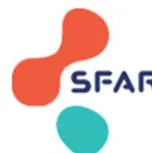
The logo for SFAR (Service Français d'Assistance et de Réassurance) is located in the top right corner. It consists of three overlapping circles in red, orange, and teal, with the letters 'SFAR' in a bold, sans-serif font to the right of the circles.Avez-vous actuellement ou avez-vous eu dans les jours précédents un ou plusieurs des symptômes suivants de façon inhabituelle ?
| - Fièvre (température mesurée >38°C) | Oui | - | Non |
| - Toux sèche | Oui | - | Non |
| - Difficulté à respirer ou fréquence respiratoire élevée (>20/min) | Oui | - | Non |
| - Maux de gorge | Oui | - | Non |
| - Rhinorrhée (« nez qui coule ») | Oui | - | Non |
| - Altération de l'état général ou fatigue importante | Oui | - | Non |
| - Céphalées (« maux de tête ») | Oui | - | Non |
| - Anosmie (perte de l'odorat) | Oui | - | Non |
| - Agueusie (perte du goût) | Oui | - | Non |
| - Douleur thoracique | Oui | - | Non |
| - Myalgies (« mal dans les muscles », courbatures) | Oui | - | Non |
| - Confusion (« pensées qui se mélangent », désorientation) | Oui | - | Non |
| - Diarrhées | Oui | - | Non |
| - Nausées et/ou vomissements | Oui | - | Non |
| - Éruption cutanée, engelures/crevasses aux doigts ou à la main | Oui | - | Non |
Avez-vous été en contact étroit (en face à face, à moins d'1 mètre et/ou pendant plus de 15 minutes, sans masque ni pour vous ni pour le contact) avec une personne atteinte de COVID de façon prouvée au cours des 15 derniers jours ?
Oui - Non
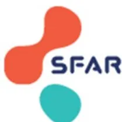
The logo for SFAR (Service Français d'Assistance Respiratoire) features three overlapping circles in red, orange, and teal, with the letters 'SFAR' in blue to the right.The logo for ADARPEF (Association des Anesthésistes et Respirateurs Pédiatriques de France) features a blue triangle containing a cartoon baby holding a pink pacifier, with the text 'ADARPEF' in blue below it.Votre enfant présente-t-il ou a-t-il présenté au cours des 15 derniers jours, un ou plusieurs de ces symptômes suivants de façon inhabituelle ?
| - Fièvre (température mesurée >38°C) | Oui - Non |
| - Toux sèche | Oui - Non |
| - Difficulté à respirer | Oui - Non |
| - Maux de gorge | Oui - Non |
| - Rhinite | Oui - Non |
| - Douleurs dans les muscles, courbatures | Oui - Non |
| - Fatigue importante | Oui - Non |
| - Céphalées (« maux de tête ») | Oui - Non |
| - Diarrhées | Oui - Non |
| - Nausées et/ou vomissements | Oui - Non |
| - Anosmie (perte de l'odorat) | Oui - Non |
| - Agueusie (perte du goût) | Oui - Non |
| - Signes cutanés (urticaire, gonflement, rougeurs et douleurs au niveau des doigts...) | Oui - Non |
Votre enfant a-t-il été en contact avec une personne ayant présenté un ou des symptômes précédents ou testée positive pour la COVID-19 au cours des 15 derniers jours ?
Oui - Non
Questionnaire à utiliser : lors de la (télé)consultation préanesthésique, lors de la visite préanesthésique, lors de l'appel à J-1 pour les patients programmés en ambulatoire.
R3.3 – Chez l'adulte et chez l'enfant, les experts suggèrent de rechercher systématiquement lors de la consultation de pré-anesthésie un antécédent de COVID-19 chez le patient devant être opéré.
Accord FORT
Argumentaire : L'antécédent d'infection à SARS-CoV-2 est un élément important de l'anamnèse en consultation de pré-anesthésie. Il conviendra de dater le plus précisément possible cette infection, et de recueillir les dates de début et de fin des symptômes si l'infection a été symptomatique.
Recueillir cet antécédent d'infection récente à SARS-CoV-2 présente deux intérêts :
Ainsi, le recueil d'un antécédent de COVID-19 récent permet de distinguer les 3 cas de figures suivants chez un patient présentant des symptômes évocateurs de COVID-19 avant une chirurgie :
REFERENCES :
R3.4 – Chez l’adulte comme chez l’enfant, les experts suggèrent d’effectuer une mesure objective de la température et de recueillir en même temps la prise ou non de médicaments antipyretiques, lors de la consultation pré-anesthésie ou de la téléconsultation (par le patient lui-même ou les parents pour les enfants), ainsi que lors de la visite pré-anesthésique ou à l’arrivée du patient à l’hôpital en cas d’admission le jour de la chirurgie.
Accord FORT
Argumentaire : La fièvre , bien qu’aspécifique, est un symptôme très fréquent des infections symptomatiques à SARS-CoV-2 présente dans 75% à 95% des cas avec les premiers variants [1-4]. La fièvre pourrait être moins fréquente dans les infections symptomatiques à variant Omicron [5], mais elle reste un symptôme évocateur et un signe d’alerte important devant faire suspecter la possibilité d’une infection à SARS-CoV-2 durant la pandémie actuelle. Toutefois, la sensation de fièvre étant très imparfaitement corrélée à la température objectivement mesurée [6], il est suggéré de mesurer la température du patient lors de toute consultation de pré- anesthésie. De plus, la prise d’antipyretiques devra aussi systématiquement être recueillie en même temps que la mesure de la température car la prise de paracétamol (voire d’AINS en automédication par le patient) peut normaliser la température du patient. Le délai entre la consultation de pré-anesthésie et la chirurgie pouvant correspondre au délai d’incubation de la maladie, une nouvelle mesure de température est justifiée lors de la visite pré-anesthésique la veille ou le jour même de la chirurgie.
REFERENCES :
R3.5 – Les experts suggèrent que chaque structure organise un circuit pérenne de prélèvement naso-pharyngé et de réalisation de RT-PCR à la recherche du SARS-CoV-2, au sein de sa structure ou en partenariat avec des laboratoires extérieurs, permettant d’avoir avant l’intervention le résultat de la PCR réalisée idéalement dans les 24h (et au maximum dans les 72h) avant la chirurgie, avec un rendu conforme aux recommandations de la Société Française de Microbiologie.
Accord FORT
Argumentaire : Les préconisations émises dans les champs 2 et 3 soulignent l'intérêt : 1) d'un test de dépistage préopératoire de l'infection à SARS-CoV-2, 2) de la RT-PCR SARS-CoV-2 comme test diagnostique de référence, 3) d'un test réalisé à partir d'un écouvillon naso-pharyngé ; pour guider la stratégie de programmation chirurgicale en contexte pandémique. Cette stratégie n'a de sens que si le prélèvement est réalisé dans un délai le plus court possible avant la chirurgie, faute de quoi le patient pourrait se présenter au bloc opératoire avec un résultat de test négatif tout en étant devenu porteur/malade du virus dans l'intervalle. Un délai de 24h précédant la chirurgie pour réaliser le prélèvement, allongé au maximum à 72h pour les patients programmés un lundi, est suggéré. Ce délai est à moduler en fonction des structures et doit intégrer le délai de rendu des résultats dans chaque laboratoire.
En ce sens, chaque structure doit organiser un circuit avec son laboratoire de virologie de référence, que celui-ci soit dans sa structure, dans un autre hôpital, ou un laboratoire de ville, pour assurer les délais de rendu de résultat mentionné ci-dessus. Un engagement de prioriser les patients relevant de l'indication d'une PCR SARS-CoV-2 préopératoire doit être obtenu du laboratoire si celui-ci fait face à plus de demandes que sa capacité de tests PCR quotidiens.
De même, à ce jour, un engagement à réaliser une PCR sur écouvillon naso-pharyngé, et non salivaire ou oro-pharyngé, doit être exigé de ce laboratoire. En effet, la HAS a confirmé que le prélèvement naso-pharyngé reste le prélèvement de choix [1]. Le prélèvement salivaire doit être réservé aux cas pour lesquels le prélèvement naso-pharyngé est impossible (déviation de la cloison nasale, patients atteints de pathologies psychiatriques...). Les autres indications retenues par l'HAS (en seconde intention chez les cas contact ou en première intention dans le cas de dépistages ciblés à grande échelle) ne concernent pas le dépistage pré-opératoire des patients chirurgicaux [2].
Enfin, les experts suggèrent de contractualiser avec le laboratoire de référence un rendu de résultat suivant les recommandations de la Société Française de Microbiologie [3]. En effet, dans son avis actualisé du 14/01/2021, la SFM souligne que l'excrétion virale peut être évaluée de façon semi-quantitative et catégorisée grâce à la valeur de Ct (cycle threshold = nombre de cycles de PCR associés à la positivité du test = estimation de la charge virale dans le prélèvement). Des recommandations sont données aux microbiologistes pour qualifier le résultat en « positif fort », « positif », « positif faible » ou « négatif », en fonction du nombre de gènes de SARS-CoV-2 amplifiés positifs et des valeurs de Ct (à l'aide d'abaques pour chaque trousse commerciale et thermocycleur disponibles en comparaison à la technique de référence). Cette distinction entre résultat « positif fort »/« positif » et « positif faible » prend en effet tout son sens dans la réflexion sur la distinction entre patient porteur de reliquat d'ARN viral après une infection et patient réellement contagieux.
[1] Avis n° 2020.0049/AC/SEAP du 24 septembre 2020 du collège de la Haute Autorité de santé – https://www.has-sante.fr/upload/docs/application/pdf/2020-
[2] https://www.has-sante.fr/upload/docs/application/pdf/2021-02/meta-analyse_rt-pcr_salive_vd.pdf.
[3] Avis du 14 janvier 2021 de la Société Française de Microbiologie relative à l'interprétation de la valeur de Ct (estimation de la charge virale) obtenue en cas de RT-PCR SARS-CoV-2 positive sur les prélèvements cliniques réalisés à des fins diagnostiques ou de dépistage. Disponible sur : https://www.sfm-microbiologie.org/wp-content/uploads/2021/01/Avis-SFM-valeur-Ct-excre%C8%B1tion-virale-_Version-def-14012021_V4.pdf
R3.6 – Les experts suggèrent de ne réaliser un test antigénique comme test diagnostique préopératoire d'infection à SARS-CoV-2 en alternative à la PCR que dans un contexte de difficultés avérées de réalisation de PCR, et uniquement pour les patients présentant tous les critères suivants :
Accord FORT
Du fait d'une sensibilité nettement moindre que la PCR, notamment chez le sujet asymptomatique, les tests antigéniques (TAg) ne peuvent pas être recommandés de façon générale en remplacement de la PCR dans le contexte préopératoire. La HAS positionne ces tests de la façon suivante : i. pour les tests antigéniques naso-pharyngés : chez les patients symptomatiques jusqu'à 4 jours suivant l'apparition des symptômes lorsqu'un résultat de PCR ne peut être obtenu en 48h, ou pour des opérations de dépistage à large échelle essentiellement dans des populations qui vivent, étudient ou travaillent dans des lieux confinés afin de repérer des clusters [1,2] ; ii. pour les tests antigéniques nasaux : chez l'adulte et l'enfant en alternative aux tests antigéniques naso-pharyngés, dans les mêmes indications que ces derniers, lorsque le prélèvement naso-pharyngé est impossible ou difficile [3,4]. De même, les autotests antigéniques ne sont indiqués que dans la sphère privée ou dans le cadre d'une auto-surveillance des cas-contacts après réalisation d'un premier TAg supervisé [5].
Les tests antigéniques n'ont donc pas de place dans la stratégie de référence de dépistage préopératoire. Néanmoins, des vagues épidémiques de grande ampleur, comme celle observée en France entre décembre 2021 et février 2022, peuvent être responsables de tensions d'approvisionnement, voire de pénurie temporaire en réactifs de PCR, ayant amené certains centres à se tourner vers la réalisation de TAg. La littérature est relativement concordante sur les sensibilités relativement médiocres des TAg actuellement disponibles. Une revue systématique avec méta-analyse récente, incluant 94 études retrouvait une sensibilité globale de 70 % IC95% (69%-71%). Celle-ci était meilleure chez les sujets symptomatiques que chez les asymptomatiques avec une sensibilité de 82 % IC95% (82%-82 %) vs 68 % IC95% (65%-71%) [6]. Cette sensibilité dépend aussi du test utilisé, certaines études rapportant des sensibilités inférieures de l'ordre de 50% [7,8] chez les patients asymptomatiques (voire encore moins pour certains tests [9-11]), et chez les patients pédiatriques [12,13].
Un patient présentant des symptômes d'infection virale dans les jours précédant une chirurgie est le plus souvent reporté jusqu'à sa guérison, quelle que soit la cause des symptômes. Ainsi, le dépistage pré-interventionnel concerne majoritairement des patients asymptomatiques, population dans laquelle la sensibilité des TAg est la moins bonne. De fait, l'utilisation de TAg dans cette indication serait source de nombreux faux-négatifs. Dans ce contexte, les experts préconisent :
d'en prioriser l'accès pour les patients devant bénéficier d'une procédure interventionnelle (cf. R3.5),
- en cas d'impossibilité de prioriser l'accès à la PCR pour les malades devant bénéficier d'une procédure interventionnelle d'utiliser comme alternative un TAg chez les patients pour lesquels un faux négatif aurait le moins de conséquence compte tenu de ses antécédents et de la nature de l'intervention programmée, à savoir les patients remplissant tous les critères suivants (Cf. Annexe 7) :
Dans ce cas le TAg doit être réalisé dans les 24 heures précédant l'intervention. Dans les autres cas, les experts préconisent de privilégier au maximum la PCR.
Une telle stratégie doit être mise en application au niveau de chaque structure, aux vues des possibles restrictions d'accès à la PCR dans chaque région, après discussion avec les équipes chirurgicales ou interventionnelles et avec les équipes opérationnelles d'hygiène, notamment pour l'établissement d'une liste des interventions majeures et à risque d'aérosolisation adaptée à la patientèle de chaque établissement.
Enfin, il est rappelé que la faible sensibilité des Tag chez les patients asymptomatiques ne permet pas d'exclure un portage asymptomatique de SARS-CoV-2 (même à charge virale élevée), une COVID-19 en incubation ou une COVID-19 peu symptomatique, et que de fait quel que soit le résultat d'un TAg réalisé en dépistage pré-interventionnel, il est recommandé de porter un masque FFP2, une coiffe et une protection oculaire pour tout le personnel amené à la gestion des voies aériennes du patient (Cf. Champ 1).
2021;68:A03210217.
graph TD; A["Schéma vaccinal complet
et patient immunocompétent ?"] -- NON --> B["PCR
recommandée"]; A -- OUI --> C["Co-morbidité(s) impactant le pronostic d'une COVID-19 ?
≥1 fdr « significatif élevé » ou « significatif très élevé »
(Cf. préambule)
≥2 fdr « significatifs »"]; C -- OUI --> D["PCR
recommandée"]; C -- NON --> E["Chirurgie majeure ?"]; E -- OUI --> F["PCR
recommandée"]; E -- NON --> G["Chirurgie avec exposition des voies aériennes ?"]; G -- OUI --> H["PCR
recommandée"]; G -- NON --> I["TAG <24h accepté
en alternative"];
Schéma vaccinal complet et patient immunocompétent ?
Co-morbidité(s) impactant le pronostic d'une COVID-19 ?
Chirurgie majeure ?
Chirurgie avec exposition des voies aériennes ?
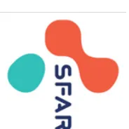
TAg : test antigénique
R3.7 – Chez l’adulte et chez l’enfant, les experts suggèrent d’utiliser les 3 algorithmes suivants (Annexes 8, 9 et 10) pour le bilan et la stratégie péri-opératoire vis-à-vis du COVID-19 avant chirurgie programmée ou urgente.
Accord FORT
Argumentaire : Ces 3 algorithmes sont issus d’un travail ayant essayé de prendre en compte un maximum de situations cliniques dans un maximum de structures, tout en essayant de rester simple. Si des dispositions locales, liées à l’accès aux examens diagnostiques, à la typologie des malades, à la prévalence du virus dans la zone géographique concernée, ou à un accord entre les différentes spécialités au niveau local, ont conduit à proposer un algorithme local différent de ceux proposés, nous suggérons que l’algorithme local puisse primer sur ceux proposés ici.
A ce jour, il n’existe pas de données spécifiques au contexte péri-opératoire chez des patients vaccinés contre le SARS-CoV-2 d’une part, et infectés majoritairement par le variant Omicron d’autre part. Dans l’attente de tels résultats, les modifications de la stratégie péri-opératoire proposée dans cette actualisation des préconisations COVID-19 de la SFAR sont issues d’extrapolations des données rapportées soit chez des patients chirurgicaux infectés avec les premiers variants de SARS-CoV-2, soit chez des patients médicaux infectés avec les variants plus récents. Les experts ont donc dû proposer une prise en charge pragmatique, en appliquant le principe de précaution, qui pourra être assouplie davantage dès que des données robustes sur ce sujet seront disponibles et confirmeront la possibilité de raccourcir sans risque pour les patients le délai de report chirurgical après une COVID-19 avec ses caractéristiques épidémiques actuelles.
POUR UNE CHIRURGIE PROGRAMMÉE (Annexe 8) :
1) En cas de positivité du test diagnostique SARS-CoV-2 préopératoire :
En effet, bien qu’aucune nouvelle étude menée chez des patients vaccinés et bénéficiant d’une chirurgie dans les 7 semaines suivant une RT-PCR positive ne permette de raccourcir ce délai de manière formelle dans cette population, deux séries américaines apportent des informations complémentaires à l’étude COVIDSurg de 2020 [1]. La première cohorte, portant sur près de 5500 patients suivis entre mars 2020 et mai 2021 confirme que les patients opérés précocement après une COVID-19 présentent un risque de complications postopératoires (respiratoires et non respiratoires) nettement augmenté dans la période 0-4 semaines après la COVID-19, augmenté de façon modérée dans la période 4-8 semaines, et rejoignant celui d’une population sans COVID-19 préopératoire après 8 semaines [2]. La seconde série, portant sur 778 patients suivis entre mars et juin 2020, rapporte que la survenue d’une détresse respiratoire aigüe (DRA) postopératoire chez les patients opérés avec une PCR SARS-CoV-2 positive était
plus fréquente chez les patients symptomatiques (26% de DRA) que chez les patients asymptomatiques (9% de DRA) [3]. Chez les sujets vaccinés, les infections à SARS-CoV-2 sont plus fréquemment asymptomatiques ou pauci-symptomatiques, en particulier en cas d'infection par le variant Omicron. Chez les patients immunocompétents, avec un schéma vaccinal complet contre le SARS-CoV-2, ayant présenté une infection asymptomatique ou pauci-symptomatique et opéré de chirurgie non majeure, le délai de report de la chirurgie peut être réduit de 6 à 4 semaines révolues (i.e. reprogrammation à partir de la 5ème semaine) probablement sans sur-risque significatif. L'application d'un délai de report de 4 semaines chez les patients ayant présenté une infection asymptomatique rejoint les recommandations américaines [4].
Dans ces cas de figure, les patients étant à risque de développer une forme grave de COVID-19, soit du fait de leurs antécédents, soit du fait de la lourdeur de la chirurgie, les préconisations issues des données de l'étude multicentrique internationale du groupe COVIDSurg doivent probablement encore s'appliquer à ce jour. Pour mémoire, cette étude rapportait un sur-risque de mortalité et de morbidité respiratoire pour tous les types de patients (< vs. > à 70 ans, ASA 1-2 vs. ASA 3-5, PCR+ avec vs. sans symptômes) et tous les types de chirurgies (régliées vs. en urgence ; mineure vs. majeure) jusqu'à 6 semaines révolues après le début de l'infection [1].
Compte tenu de l'existence de résultats faussement négatifs, soit liés à un prélèvement de mauvaise qualité, soit liés à un défaut de sensibilité des tests (et notamment pour les tests antigéniques, cf. R3.6), il convient également de tenir compte de la présentation clinique du patient (réponse à l'auto-questionnaire standardisé).
notamment en cas de patient présentant des facteurs de risque de forme grave de COVID-19 et/ou devant être opéré de chirurgie majeure, de réaliser une TDM thoracique, dont la valeur prédictive négative est élevée (environ 85 à 95%) [9,10]. La sérologie n'a ici aucune place, puisqu'elle ne se positive qu'après 7 à 10 jours après le début des symptômes [11,12], et qu'elle ne permet pas toujours de distinguer une réponse sérologique à une infection à SARS-CoV-2 d'une vaccination. Si à l'issue de ce bilan un ou plusieurs examens sont évocateurs de COVID-19, il est raisonnable de considérer que le patient est infecté à SARS-CoV-2, et de reporter la chirurgie de 4 à 6 semaines avec la même stratégie de durée de report qu'en cas de PCR positive. Si à l'issue de ce bilan, il n'existe aucun élément évocateur de COVID-19, le patient présente alors probablement une infection autre, et la chirurgie sera reportée jusqu'à la guérison de ce diagnostic alternatif.
En cas de report de la chirurgie de la durée indiquée (4 ou 6 semaines selon les cas) :
- si le patient est guéri cliniquement (asymptomatique, ou présentant isolément une anosmie, une agueusie, une dyspnée persistante, ou une asthénie persistante), et en l'absence d'émergence d'un nouveau variant d'intérêt pour lequel la protection conférée par l'immunité acquise contre Omicron ne serait pas satisfaisante, le patient peut être opéré dans un circuit conventionnel sans nouveau test diagnostique préopératoire. En effet, le Haut Conseil de Santé Public (HCSP) considère que les patients ne présentent plus qu'un risque faible de contagiosité à la levée de l'isolement, et un risque quasi nul si le patient n'a plus de symptômes ORL ou de toux. A l'ère d'Omicron, chez les patients vaccinés à partir de 5 jours pleins après le début des symptômes si le patient est devenu asymptomatique depuis au moins 48h, et chez les patients non vaccinés à partir de 7 jours pleins après le début des symptômes si le patient est devenu asymptomatique depuis au moins 48h [14]. Les périodes de report proposées dans ces préconisations dépassent donc le délai pendant lequel le personnel est exposé à un risque de contagion par un patient ayant été infecté. Ces périodes de report dépassent également les premières données rapportées concernant le délai de positivité de la PCR SARS-CoV-2 pour le variant Omicron (10 jours, IC95% (8,8-11)) [15] et les délais de contagiosité rapportés pour les précédents variants [16,17]. Une exception pourrait être les patients avec une immunodépression lymphocytaire B (d'origine hématologique ou iatrogène liée à des traitements comme le Rituximab) chez qui des portages viraux à taux élevé probablement infectant ont été retrouvés sur des périodes plus longues [18-20]. Cette stratégie pourrait être révisée en cas d'émergence d'un nouveau variant rendant possible une nouvelle infection à SARS-CoV-2 précocement après une infection à SARS-CoV-2 variant BA.* Omicron.
- si le patient présente toujours des symptômes compatibles avec une COVID-19 active, une discussion pluridisciplinaire doit alors porter sur le délai admissible de report au vu de la chirurgie à réaliser et du pronostic éventuel de la maladie sous-jacente. Si le pronostic de la pathologie sous-jacente ne permet plus aucun report, les experts suggèrent de réaliser une PCR SARS-CoV-2 préopératoire quantitative (i.e. avec rendu du Ct, cf. R3.5) pour savoir si le patient présente encore un risque de contagiosité ou non, et alors de réaliser la chirurgie respectivement en circuit COVID ou conventionnel.
Par définition non reportable, la chirurgie devra avoir lieu. Il convient de distinguer deux situations/structures de soins.
Dans le contexte pédiatrique, le raisonnement est similaire à celui exposé plus haut pour l'adulte. Les indications du dépistage préopératoire par PCR peuvent être modulées en fonction des données épidémiologiques régionales, de l'organisation et des différents facteurs de risque liés au patient et à la chirurgie. Par contre le dépistage des sujets à risque, basé sur les questionnaires chez l'enfant et chez les personnes du même foyer, reste systématique. De la même façon les préconisations concernant la protection du personnel lors des gestes à risque, sont maintenues quel que soit le statut de l'enfant.
graph TD
Start[Questionnaire standardisé en consultation d'anesthésie + visite pré-anesthésique] --> PCR_Pos[PCR COVID-19 POSITIVE]
Start --> PCR_Neg[PCR COVID-19 NÉGATIVE]
PCR_Pos --> Symptomatic[Patient symptomatique avec symptômes respiratoires ou ayant été hospitalisé]
PCR_Pos --> Asymptomatic[Patient vacciné et asymptomatique ou peu/symptomatique sans symptôme respiratoire]
Symptomatic --> Surgery{Chirurgie majeure ?}
Asymptomatic --> Surgery
Surgery -- Oui --> Report_6[Report de la chirurgie d'au moins 6 semaines*]
Surgery -- Non --> Report_4[Report de la chirurgie d'au moins 4 semainesÉ]
PCR_Neg --> Clinically_Suspect[Patient cliniquement suspect de COVID-19]
PCR_Neg --> Asymptomatic_Patient[Patient asymptomatique]
Clinically_Suspect --> Repeat_PCR[Refaire la PCR COVID-19 sur écouvillon naso-pharyngé ± TDM thoracique et bilan biologique]
Repeat_PCR --> Positive_Exam[Examen(s) positif(s)]
Repeat_PCR --> Negative_Exam[Examens négatifs]
Positive_Exam --> Infection_Prob[Infection COVID-19 peu probable]
Negative_Exam --> Infection_Prob
Infection_Prob --> Report_Strat[Report de la chirurgie selon stratégie habituelle hors pandémie COVID-19]
Asymptomatic_Patient --> Intervention[Intervention]
CHIRURGIE PROGRAMMÉE
Questionnaire standardisé en consultation d'anesthésie + visite pré-anesthésique
PCR COVID-19 POSITIVE
Patient symptomatique avec symptômes respiratoires ou ayant été hospitalisé
Patient vacciné et asymptomatique ou peu/symptomatique sans symptôme respiratoire
Chirurgie majeure ?
Oui
Non
Report de la chirurgie d'au moins 6 semaines*
Report de la chirurgie d'au moins 4 semainesÉ
PCR COVID-19 NÉGATIVE
Patient cliniquement suspect de COVID-19
Patient asymptomatique
Refaire la PCR COVID-19 sur écouvillon naso-pharyngé ± TDM thoracique et bilan biologique
Examen(s) positif(s)
Examens négatifs
Infection COVID-19 peu probable
Report de la chirurgie selon stratégie habituelle hors pandémie COVID-19
Intervention
* période optimale de report de 6 semaines révolues, i.e. reprogrammation à partir de la 7e semaine, à discuter au cas par cas en cas de chirurgie semi-urgente en fonction du rapport bénéfice/risque (CG. R2.2)
É période optimale de report de 4 semaines révolues, i.e. reprogrammation à partir de la 5e semaine, à discuter au cas par cas en cas de chirurgie semi-urgente en fonction du rapport bénéfice/risque (CG. R2.2)
ANNEXE 9. Stratégie de prise en charge pré-opératoire après report d'une intervention (mise à jour d'avril 2022)
CHIRURGIE REPORTÉE
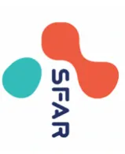
The logo for SFAR (Société Française d'Anesthésie et Réanimation) is located in the top right corner. It consists of two stylized, overlapping shapes, one red and one teal, with the letters 'SFAR' in a bold, sans-serif font below them.graph TD; A["Chirurgie reportée pour
PCR SARS-CoV-2 positive
d'au moins 4 ou 6 semaines selon R3.7"] --> B["Patient asymptomatique (guéri)
(hors anosmie, agueusie ou asthénie isolée persistante)"]; B --> C["Oui"]; B --> D["Discussion pluridisciplinaire de
la balance bénéfice/risque d'un
report supplémentaire"]; C --> E["Intervention
circuit conventionnel"]; D --> F["Report
impossible"]; F --> G["Intervention
circuit COVID-19"]; D -.-> H["Nouveau report"]; H -.-> A;
The flowchart outlines the process for reporting a cancelled surgery. It begins with a box stating the surgery was cancelled due to a positive SARS-CoV-2 PCR test for at least 4 or 6 weeks. This leads to a decision point: if the patient is asymptomatic (cured, excluding isolated persistent anosmia, agueusia, or asthenia), the process proceeds to a 'Oui' (Yes) box, which leads to a 'circuit conventionnel' (conventional circuit) intervention. Alternatively, a multidisciplinary discussion on the balance of benefits and risks of a further postponement is conducted. If the report is impossible, it leads to a 'circuit COVID-19' intervention. If a new report is needed, it loops back to the initial cancellation box.
ANNEXE 10. Stratégie de dépistage et prise en charge pré-opératoire pour chirurgie en urgence (mise à jour d'avril 2022)
graph TD
Start["Questionnaire standardisé
+ PCR COVID-19 sur écouvillon naso-pharyngé"] --> Decision{"Résultat de la PCR disponible avant la chirurgie ?"}
Decision -- Non --> Test1["Test antigénique COVID-19 sur écouvillon naso-pharyngé"]
Test1 --> Result1["Test antigénique COVID-19 NÉGATIF"]
Result1 --> Patient1["Patient asymptomatique"]
Result1 --> Patient2["Patient cliniquement suspect de COVID-19"]
Patient2 --> Check1["Refaire le test antigénique ± TDM thoracique et bilan biologique"]
Check1 -- "-" --> Interv1["Intervention Circuit conventionnel
Vigilance sur protection du personnel"]
Check1 -- "+" --> Interv2["Intervention Circuit COVID+"]
Decision -- Oui --> Test2["PCR COVID-19 sur écouvillon naso-pharyngé"]
Test2 --> Result2["PCR COVID-19 NÉGATIVE"]
Result2 --> Patient3["Patient asymptomatique"]
Patient3 --> Interv3["Intervention Circuit conventionnel"]
Test2 --> Result3["PCR COVID-19 POSITIF"]
Result3 --> Interv2
Interv2 --> Detail["Intervention avec protection du personnel (Cf. Q1) Circuit avec salle identifiée « COVID » (Cf. Q6) Priviléger ALR et maintien en VS si possible"]
Detail --> Check2["Réveil au bloc*
Remontée en chambre si pas de symptômes respiratoires
Surveillance 24-48h en soins critiques si chirurgie majeure"]
Check2 --> Patient4["Patient cliniquement suspect de COVID-19"]
Patient4 --> Check3["Refaire la PCR COVID-19 ± TDM thoracique et bilan biologique
Ne pas attendre les résultats"]
Check3 --> Interv4["Intervention Circuit conventionnel"]
CHIRURGIE URGENTE
Questionnaire standardisé + PCR COVID-19 sur écouvillon naso-pharyngé
Résultat de la PCR disponible avant la chirurgie ?
Non
Test antigénique COVID-19 sur écouvillon naso-pharyngé
Test antigénique COVID-19 NÉGATIF
Patient asymptomatique
Patient cliniquement suspect de COVID-19
Refaire le test antigénique ± TDM thoracique et bilan biologique
-
Intervention Circuit conventionnel
Vigilance sur protection du personnel
+
Oui
PCR COVID-19 sur écouvillon naso-pharyngé
PCR COVID-19 NÉGATIVE
Patient asymptomatique
Intervention Circuit conventionnel
PCR COVID-19 POSITIF
Circuit COVID+
Intervention avec protection du personnel (Cf. Q1)
Circuit avec salle identifiée « COVID » (Cf. Q6)
Priviléger ALR et maintien en VS si possible
Réveil au bloc*
Remontée en chambre si pas de symptômes respiratoires
Surveillance 24-48h en soins critiques si chirurgie majeure
Patient cliniquement suspect de COVID-19
Refaire la PCR COVID-19 ± TDM thoracique et bilan biologique
Ne pas attendre les résultats
Intervention Circuit conventionnel
* réveil en salle si durée < 60 min ou espace dédié de SSPI avec isolement géographique et masque pour le patient si > 60 min
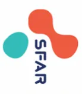
Experts : Philippe Cuvillon (Nîmes), Estelle Morau (Nîmes), Frédéric Le Saché (Paris), Jane Muret (Paris), Catherine Huraux (Grenoble).
R4.1 – La consultation pré-anesthésique préopératoire chez l’adulte et chez l’enfant est une obligation fixée par décret [1] et la crise sanitaire ne peut être un motif de dérogation. |
| Accord FORT |
R4.2 – Pour la chirurgie urgente, les experts suggèrent de réaliser les consultations de pré-anesthésie des patients (chez l’adulte et chez l’enfant) :
|
| Accord FORT |
R4.3 – Pour la chirurgie programmée, les experts suggèrent avant toute prise de rendez-vous de réaliser une évaluation préalable par questionnaire standardisé COVID (cf. R3.1) permettant d’identifier le statut des adultes ou enfants :
|
| Accord FORT |
R4.4 – Pour les consultations programmées chez l’adulte et l’enfant, les experts suggèrent de privilégier les mesures de distanciation, en particulier par l’utilisation des téléconsultations (mesure dérogatoire, cf. R4.5 et 4.6). Lorsqu’elle est nécessaire, la consultation présentielle doit respecter les mesures barrières pour les patients, personnels et locaux (cf. R1.1). Dans ce cas, les experts suggèrent une évaluation des patients par questionnaire de dépistage et prise de température dès leur arrivée en consultation. |
| Accord FORT |
Argumentaire : Le guide méthodologique du ministère des solidarités et de la santé concernant la crise COVID-19 précise la nécessité de contrôler les flux et les circuits haute et basse densité virale [2]. Pour limiter les flux de patients, le recours à la téléconsultation est conseillé. La téléconsultation est inscrite dans le code de santé publique depuis 2010 (loi HSPT) [3]. Autrefois non éligible au remboursement, la téléconsultation pré-anesthésique répond, depuis les modifications législatives effectuées pendant la pandémie COVID [4], à la version la plus récente des conditions prévues dans l'avenant à la convention médicale [5] ouvrant droit au remboursement. En cas de téléconsultation, la réalisation d'examens complémentaires doit être adaptée afin de ne pas retentir sur l'organisation du programme opératoire.
REFERENCES :
R4.5 – Pour la téléconsultation chez l'adulte et l'enfant, les experts suggèrent que celle-ci réponde aux impératifs du décret de décembre 1994 sur la sécurité anesthésique. Les experts rappellent les règles élémentaires d'une téléconsultation :
Accord FORT
Argumentaire : Cf. argumentaire de la R4.1
R.4.6 – Concernant la téléconsultation, les experts suggèrent :
Accord FORT
R4.7 – Concernant la téléconsultation, les experts soulignent que :
Accord FORT
Argumentaire : Le patient (ou le cas échéant son représentant légal) doit être informé des conditions de réalisation de la téléconsultation et avoir donné son consentement préalable à la réalisation de la téléconsultation (article R. 6316-2 du CSP).
L'adhésion des patients à ce type de consultation est variable, entre 50 et 97% [1, 2]. La satisfaction rapportée des patients qui ont choisi cette modalité se situe entre 95 et 97% [3].
La téléconsultation doit être réalisée via des outils garantissant la sécurité des données des patients [4]. Elle est réalisée dans des conditions devant garantir : l'authentification des professionnels de santé intervenant, l'identification du patient et l'accès des professionnels de santé aux données médicales du patient nécessaires à la réalisation de l'acte (Article R. 6316-3 du Code de la santé publique). Les modalités de déploiement sont propres à chaque centre.
L'appel téléphonique est une solution dégradée de téléconsultation si une visioconférence est impossible à réaliser pour des raisons techniques. Elle a été envisagée pour certains patients COVID+ ou ayant des facteurs de risque vis-à-vis de la COVID-19 [5, 6].
Le médecin anesthésiste-réanimateur doit être dans des locaux permettant de respecter la confidentialité des échanges et la protection du secret médical (Article R.4127-71 du Code de la santé publique).
En cas de besoin, une personne de l'entourage du patient ou un interprète peut, s'il est présent pendant la téléconsultation, assister le médecin dans le recueil des informations médicales. Depuis janvier 2020, l'accompagnement dans la téléconsultation peut être réalisé et valorisé par les infirmiers se rendant au domicile du patient (cotations applicables) [7].
À tout moment la téléconsultation peut s'arrêter à la demande du praticien ou du patient et
conduire à une convocation en présentiel (critères de téléconsultation mal adaptés, problème de connexion, etc.) [8].
Dans une série publiée sur l'évaluation préopératoire par télémédecine les taux rapportés d'échec de ces consultations, traduites par des annulations d'intervention, sont aussi bas que lors d'évaluations présentielles [9, 10]. L'expérience acquise avec le début de la téléconsultation en Anesthésie-Réanimation montre que l'utilisation du téléphone entraîne des problématiques importantes d'identité et de confidentialité et ne devrait être utilisé que comme solution dégradée dans des situations très spécifiques telles qu'un nouveau confinement, un patient COVID + ne pouvant donc pas se déplacer, pour la réactualisation d'une consultation d'un patient déjà vu physiquement.
REFERENCES :
D. Points spécifiques au déroulement de la téléconsultation.
R4.8 – Les experts suggèrent d'envoyer au patient préalablement à la téléconsultation un guide de préparation (comprenant : modalités de connexion, questionnaire de santé relevant les traitements en cours, documents d'informations...) pour faciliter le bon déroulement de la consultation.
Accord FORT
R4.9 – Les experts suggèrent d'adapter l'évaluation des voies aériennes supérieures (critères prévisibles de difficulté d'intubation) et de la réévaluer systématiquement lors de la visite pré-anesthésique.
Accord FORT
R4.10 – Les experts suggèrent que les informations données au patient (technique d'anesthésie, modalité d'hospitalisation...) répondent aux mêmes règles qu'en présentiel et soient tracées dans le compte rendu de consultation (dossier d'anesthésie) avec la mention de « téléconsultation ».
| Accord FORT |
| R4.11 – Les experts suggèrent de formaliser et de sécuriser le mode d’envoi de documents au patient en fin de consultation (ordonnances, bilans préopératoires, compte rendu...). |
| Accord FORT |
|
Argumentaire : L’envoi ou la mise à disposition d’un guide de préparation de la téléconsultation permet au patient de rassembler les éléments indispensables à sa bonne évaluation par le médecin [1]. Ainsi, le jour de la téléconsultation, l’anesthésiste-réanimateur pourra avoir accès aux ordonnances récentes, résultats d’examens et comptes rendus médicaux. Pour rappel, la téléconsultation doit au minimum permettre de recueillir (indicateurs de sécurité et de qualité des soins – HAS) [2] :
L’évaluation des voies aériennes est adaptée à l’outil : des évaluations par clichés photographiques peuvent être enregistrées (photo profil et en extension du cou), recherche des critères de Mallampati avec source lumineuse, des mesures effectuées par le patient (mesure de l’ouverture de bouche en travers de doigts). Le compte-rendu doit être enregistré dans le dossier patient tenu par le professionnel de santé: compte-rendu de la réalisation de la consultation, date et heure de la consultation (article R. 6316-4 du CSP). Dans le cadre de la consultation de pré-anesthésie le compte rendu mentionne le type « téléconsultation » et prévoit pour la visite pré-anesthésique les éléments devant être confirmés (Mallampati, auscultation cardio-pulmonaire, prise des constantes lors de la visite pré-anesthésique). Si des bilans biologiques, radiologiques et/ou des avis spécialisés sont prescrits lors de la téléconsultation et susceptibles de modifier la prise en charge péri- opératoire, la balance bénéfice/risque entre le fait de déplacer une fois le patient pour réaliser l’ensemble des examens vs. les réaliser à l’entrée (veille ou matin) de l’anesthésie, doit être évaluée au cas par cas dans le contexte de confinement (sécurité anesthésique vs. risque de contamination). Si le choix est fait de réaliser ces examens complémentaires à l’entrée (veille ou matin de l’anesthésie) le patient ou responsables légaux, et l’opérateur doivent être avertis du risque de retard de prise en charge au bloc opératoire ou du risque de report à une date ultérieure. Il appartient à l’anesthésiste-réanimateur de s’assurer en collaboration avec l’opérateur qu’un éventuel report n’entraînera pas de perte de chance pour le patient. |
|
REFERENCES : [2] https://www.has-sante.fr/upload/docs/application/pdf/2013-11/fiche_descriptive_dan2_tda_26.11.13.pdf |
R4.12 – Dans le contexte de pandémie de COVID-19, les experts suggèrent de favoriser le recours à la téléconsultation. Une évaluation au cas par cas devra être réalisée selon la chirurgie envisagée et selon le patient (rapport bénéfice-risque).
Accord FORT
Argumentaire : La téléconsultation semble particulièrement adaptée pour les opérés de chirurgie à risque faible et intermédiaire et chez les patients ASA 1 et 2 [1]. Elle peut également s'envisager chez des patients à risque plus élevé qui peuvent bénéficier d'un accompagnement paramédical à la prise en charge (résidant d'EPHAD ou à leur domicile) ou personnes détenues (Annexe 12). Les expériences de téléconsultations dans les pays anglo-saxons rapportent des évaluations à distance de patients poly-morbides sans augmentation du taux de déprogrammation. Les pratiques sont néanmoins peu comparables dans la mesure où l'évaluation pré-anesthésique n'est pas proposée systématiquement dans ces organisations [2, 3]. Dans le cadre de l'obstétrique, les téléconsultations sont fortement conseillées pour permettre un suivi à distance des parturientes incluant la consultation de pré-anesthésie [4]. Dans les cas des consultations itératives le choix des téléconsultations proposé par la SFAR en 2017 est conforté [1].
R4.13 – Les experts rappellent que la visite pré-anesthésique est une obligation légale et suggèrent qu'elle soit réalisée de façon encore plus attentive en cas de téléconsultation, et « séniorisée » en pédiatrie.
Accord FORT
R4.14 – Les experts suggèrent l'évaluation des pratiques pour mettre en place des actions d'amélioration de ces nouvelles modalités consistant à comparer régulièrement les pratiques effectuées et les résultats obtenus, sur la base des recommandations professionnelles.
Accord FORT
Argumentaire : La consultation pré-anesthésie ne se substitue pas à la visite pré-anesthésique qui est effectuée par un médecin anesthésiste-réanimateur dans les vingt-quatre heures précédant l'acte nécessitant une anesthésie. Cette visite a notamment pour but de vérifier l'absence d'éléments médicaux nouveaux depuis la consultation pré-anesthésie (Article D-6124-
94).
Le jour de l'admission, une attention particulière devra être apportée à vérifier le respect des consignes (gestion traitement, jeûne pré-opératoire, préparation cutanée, etc.) et à l'examen physique (auscultation cardio-pulmonaire, évaluation des voies aériennes supérieures, etc.) si nécessaire.
Concernant ces nouvelles modalités de consultations, des évaluations (article L. 4133-1-1 du CSP) devront être menées suivant les recommandations et selon la méthode élaborée ou validée par la Haute Autorité de Santé incluant la mise en œuvre et le suivi d'actions d'amélioration des pratiques (indicateurs médical, organisationnel, technique et économique).
L'avenant 6 de la convention médicale définit le cadre de prise en charge de ces actes par l'assurance maladie et permet dès lors la généralisation de la pratique en France. L'avenant 6 reprend précisément les détails et conditions de la téléconsultation publiés en 2010 et décrit la prise en charge des patients par l'assurance maladie selon un parcours de soin défini :
Elle définit pour ces parcours les cotations : TCG pour le médecin généraliste et TC pour le médecin spécialiste auxquelles s'ajoutent les différents majorateurs ainsi que les éventuels compléments d'honoraires dans les conditions habituelles de l'établissement (secteur 2, etc.). Les règles de prise en charge sont les mêmes que pour une consultation en présentiel, selon les mêmes taux de prise en charge qu'une consultation classique. Les consultations complexes ne sont par contre pas éligibles à la téléconsultation (pas de cotation APC).
L'arrêté du 23 mars 2020, dans le cadre de la pandémie COVID-19, vient temporairement déroger l'avenant 6 permettant d'accéder pour toutes les spécialités (et pour les SF) à la facturation et au remboursement pour les patients exposés au COVID-19. Par extrapolation, les patients non suspects mais risquant d'être exposés au COVID-19 en se rendant dans les établissements de santé se sont vu proposer une téléconsultation pour limiter les déplacements comme proposés par le ministre de la santé. Début Avril 2020 la cotation APC a été reconnue en téléconsultation de façon dérogatoire par l'assurance maladie.
Questionnaire standardisé* de statut COVID des patients en amont (< à 48 heures )
graph TD
Start[Questionnaire standardisé* de statut COVID des patients en amont < à 48 heures] --> Filiere1[FILIÈRE COVID+]
Start --> Filiere2[FILIÈRE non-COVID]
Filiere1 --> Urgence[Urgence 24-48 Heures]
Filiere1 --> Chirurgie1[Chirurgie SANS REPORT possible
Engagement du pronostic vital ou fonctionnel]
Filiere1 --> Tele1[Téléconsultation **** **]
Filiere1 --> NonFeasible1[si non réalisable]
Urgence --> Filiere3[FILIÈRE COVID+]
Chirurgie1 --> Filiere3
Tele1 --> Filiere3
NonFeasible1 --> Filiere3
Filiere2 --> Chirurgie2[Chirurgie avec REPORT possible]
Filiere2 --> Tele2[Téléconsultation **** **]
Filiere2 --> NonFeasible2[si non réalisable]
Chirurgie2 --> Filiere4[FILIÈRE non-COVID]
Tele2 --> Filiere4
NonFeasible2 --> Filiere4
Filiere4 --> Asymptomatic[Asymptomatique sur questionnaire
Dernier(s) symptôme(s)
de plus de 4 ou 6 semaines selon R3.7
PCR négative]
FILIERE COVID+
Urgence 24-48 Heures
Chirurgie SANS REPORT possible
Engagement du pronostic vital ou fonctionnel
Téléconsultation **** **
si non réalisable
FILIERE COVID+
Chirurgie avec REPORT possible
Téléconsultation **** **
si non réalisable
FILIERE non-COVID
Asymptomatique sur questionnaire
Dernier(s) symptôme(s)
de plus de 4 ou 6 semaines selon R3.7
PCR négative
FILIERE non-COVID
Filière de consultation présente
FILIERE non-COVID
Filière de consultation présente
FILIERE non-COVID
Filière de consultation présente
* Cf dépitage préopératoire : Champ 3 R3.1 et Annexe 5
** La téléconsultation doit privilégier la visio; l'appel téléphonique correspond à une situation dégradée et doit être justifiée dans le dossier du patient
Experts : Denis Frasca (Poitiers), Philippe Cuvillon (Nîmes), Sébastien Bloc (Paris), Marie-Pierre Bonnet (Paris), Thomas Geeraerts (Toulouse), Olivier Langeron (Paris), Anne Godier (Paris), Sigismond Lasocki (Angers), Axel Maurice-Szamburski (Marseille), Benoît Tavernier (Lille).
Après une première période épidémique au printemps 2020 marquée par des tensions d'approvisionnement sur certains médicaments d'anesthésie-réanimation et dans une moindre mesure de matériels de protection, la gestion des réserves de médicaments est désormais moins tendue. Le diagnostic d'infection par le SARS-CoV-2 est également obtenu plus rapidement, pouvant même être disponible en moins de 30 minutes grâce à des PCR rapides dans certains centres. Dans ce contexte, le statut COVID-19 des patients est le plus souvent connu à l'arrivée au bloc opératoire, permettant dans de nombreux cas d'appliquer des protocoles anesthésiques habituels. Dans ce contexte, il n'est plus recommandé l'épargne systématique des médicaments de l'anesthésie (propofol, midazolam et curares). En cas de tensions ponctuelles et/ou locales sur l'un ou l'autre des médicaments, il est suggéré de se reporter aux versions précédentes de ces recommandations.
R5.1 – Les experts suggèrent de communiquer régulièrement avec le pharmacien d'établissement qui pilote les stocks de médicaments afin d'adapter leur pratique, répartir les stocks et renforcer les mesures de prévention des erreurs médicamenteuses, en particulier pour les médicaments d'importation dont les concentrations sont inhabituelles et les contenants libellés en langue étrangère.
Accord FORT
Argumentaire : Afin de prévenir et pallier les difficultés d'approvisionnement en médicaments, l'État a assuré à partir d'avril 2020 l'approvisionnement des établissements de santé en médicaments dits "prioritaires", à savoir deux hypnotiques : le Midazolam et le Propofol et trois curares : l'Atracurium, le Cisatracurium et le Rocuronium nécessaires à la prise en charge des patients atteints de la COVID-19 et des patients admis en soins critiques. La plateforme maPUI.fr avait été déployée au niveau national pour permettre un suivi des stocks de ces 5 molécules prioritaires, mais également d'une sélection de médicaments très largement utilisés dans la prise en charge en soins critiques des patients COVID (antibiotiques, anesthésiques halogénés, morphiniques...) [1, 2]. La distribution centralisée, en fonction des stocks et du nombre de patients COVID-19 hospitalisés au sein de chaque établissement, de ces médicaments prioritaires, souvent importés en urgence, a conduit à des stocks qui persistent actuellement dans nombre d'établissements. Dans un contexte de tension régulière en médicaments, une solution pérenne de suivi des stocks dans les établissements disposant d'une PUI a été mise en place (plateforme e-Dispostock qui permettra la remontée de ces stocks et une supervision à la fois régionale par les ARS/Omédits et nationale) [3].
Ainsi, les pharmaciens d'établissement doivent renseigner l'état des stocks et des consommations de leur structure sur cette plateforme permettant de piloter les niveaux de disponibilité des différentes molécules. Ce sont les interlocuteurs des médecins anesthésistes-réanimateurs pour les alerter sur le niveau des stocks de médicaments (exprimé en jour(s) de stock pour une activité habituelle) et de leur rupture éventuelle. Les PUI sont également chargées du conditionnement approprié et de l'étiquetage en français des médicaments d'importation qui sont encore en circulation dans les établissements.
Dans la période de crise sanitaire et la pression produite par les dispositions de protection (EPI, gestion des voies aériennes), le risque d'erreurs médicamenteuses lors de toutes les étapes de la prise en charge médicamenteuse est accru par :
Ce risque est aggravé par les modalités d'approvisionnement :
La maîtrise du risque doit être renforcée à chaque étape du circuit du médicament : prescription, dispensation, stockage, préparation (dilution, étiquetage) et administration. Cette démarche implique tous les acteurs de l'établissement [6].
REFERENCES :
R5.2 – Les experts suggèrent de privilégier, à rapport bénéfice/risque équivalent, les techniques d'anesthésie locorégionale ou locale. Les techniques d'analgésie locorégionale et d'infiltration doivent également être envisagées.
Accord FORT
Argumentaire : La population des patients COVID+ présente un risque de complications postopératoires élevé, notamment respiratoire et thromboembolique [1]. Si le type d'anesthésie (générale, locorégionale ou locale) ne ressort pas dans la littérature comme facteur indépendant d'aggravation pour la population spécifique des patients COVID+ [2], le recours à une anesthésie sans ventilation mécanique reste toujours souhaitable pour limiter le risque de complication respiratoire [3].
Par ailleurs, la manipulation des voies aériennes lors d'une anesthésie générale augmente le risque de contamination virale [4] et d'aérosolisation [5], là où les techniques d'ALR périphériques et centrales permettent de maintenir les mesures de protection du patient (port du masque), diminuent l'exposition des soignants durant les procédures d'anesthésie et de chirurgie [6,7] et présentent un rapport bénéfice/risque favorable [8].
Les techniques d'anesthésie locorégionale périphériques et topiques autorisent également la surveillance post-interventionnelle directement en chambre ou dans un espace dédié, sans passer par la SSPI conformément à la réglementation [9]. Cela facilite le respect des mesures de distanciation propres au contexte épidémique actuel. Chez l'enfant, les techniques d'ALR étant associées régulièrement à une anesthésie générale ou une sédation, elles ne permettent pas d'éviter le passage en SSPI.
Ces recommandations s'appliquent aux prises en charges programmées et en urgence.
REFERENCES :
B. Y-a-t-il des particularités pour la prise en charge des voies aériennes ?
R5.3 – Concernant la gestion des voies aériennes lors de l'intubation d'un patient COVID+ ou fortement suspect, les experts renvoient aux “recommandations d'experts portant sur la prise en charge en réanimation des patients en période d'épidémie à SARS-CoV-2” édictées par les SRLF-SFAR-SFMU-GFRUP-SPILF-SPLF et à la fiche “principe de gestion des voies aériennes” qui sont également applicables au bloc opératoire.
Accord FORT
Argumentaire : En période de pandémie COVID-19, l'intubation au bloc opératoire, d'un patient COVID+ repose sur les mêmes règles que celles émises en milieu de réanimation, du fait du risque d'aérosolisation du virus au cours de ce geste particulièrement à risque. Afin de limiter au maximum le risque d'aérosolisation et de contamination du personnel, il convient de :
R5.4 – Les experts suggèrent de réaliser préférentiellement une induction en séquence rapide pour la gestion des voies aériennes d'un patient COVID+ ou fortement suspecté.
Accord FORT
R5.5 – Les experts suggèrent de réaliser une induction selon les schémas habituels pour la gestion des voies aériennes d'un patient non-COVID.
Accord FORT
Argumentaire : Si une anesthésie générale est indispensable, il faudra prendre en compte l'état clinique et le statut COVID-19 du patient pour adapter la stratégie de gestion des voies aériennes.
Si le patient est COVID+ ou fortement suspecté : il conviendra d'appliquer la procédure décrite par la SFAR [1] avec une induction en séquence rapide et intubation orotrachéale. Une attention particulière sera portée à l'extubation trachéale avec les mêmes précautions de mesures barrières que pour l'intubation. Ceci s'applique a priori aux patients suspects de COVID-19 pris en charge en urgence, quand le statut COVID-19 est inconnu. Il convient également d'avoir une attention toute particulière à l'hygiène des mains.
Si le patient est non-COVID : il n'est pas nécessaire de modifier les procédures habituelles uniquement en raison de la pandémie de COVID-19. Une prise en charge habituelle des voies aériennes est préconisée. Si une intubation est décidée, une induction classique est préconisée selon les recommandations habituelles, avec une adaptation de la séquence d'induction en fonction des conditions hémodynamiques, des contre-indications médicamenteuses et du respect des conditions de jeûne et de l'âge du patient. La fréquence de l'anaphylaxie due à l'atracurium a été estimée à 1/22451 administrations. Celle liée aux curares d'action rapide est environ 10 fois plus fréquente (succinylcholine: 1/2080 et rocuronium : 1/2499) [2]. Le sur-risque d'allergie grave pour le patient lié à une induction en séquence rapide ne paraît pas justifié par le seul risque de contamination à SARS-CoV-2 des soignants, ce risque étant faible lorsque les mesures de protection telles que préconisés dans le Champ 1 sont bien respectées. Nous invitons les lecteurs à se rapporter aux RFE SFAR 2018 "Curarisation et décurarisation en anesthésie" [3]. Chez un patient non-COVID, une anesthésie en ventilation spontanée ou la mise en place de dispositifs supra-glottiques comme les masques laryngés est possible.
Nous insistons sur l'importance au cours de la check-list pré-opératoire de partager avec le
personnel du bloc opératoire, en plus des informations habituelles, le statut COVID du patient qui déterminera son circuit péri-opératoire et la stratégie adoptée par l'équipe d'anesthésie pour la gestion des voies aériennes.
REFERENCES :
C. Existe-t-il des particularités pour la prise en charge postopératoire, y compris en ambulatoire ?
R5.6 – Les experts suggèrent d'appliquer les stratégies habituelles d'analgésie multimodale et de prévention des nausées-vomissements, y compris en ambulatoire.
Accord FORT
R5.7 - Les experts suggèrent de prendre en compte la balance bénéfice/risque lors de la prescription postopératoire de patients atteints de COVID-19. L'utilisation des AINS doit probablement être évitée chez le patient COVID+ ou suspect mais reste possible dans les autres cas.
Accord FORT
R5.8 - Les experts suggèrent qu'en période de pandémie de COVID-19 les stratégies habituelles de thromboprophylaxie postopératoire soient appliquées. Pour l'évaluation du risque, on notera qu'une COVID-19 est un facteur de risque thromboembolique.
Accord FORT
Argumentaire : La douleur et les nausées et vomissements postopératoires (NVPO) sont les complications les plus fréquentes du parcours ambulatoire. Elles sont source de consultations médicales et de ré-hospitalisation exposant le patient a un nouveau risque de transmission virale [1]. L'utilisation de dexaméthasone dans un but de prévention des NVPO est possible.
Les AINS pourraient être associés à une aggravation des symptômes lors des viroses respiratoires, avec un risque de surinfection bactérienne [2]. Malgré les alertes initiales basées sur quelques case-reports, il n'existe pas à ce jour de preuve scientifique robuste associant la prise d'AINS et l'aggravation d'une infection à SARS-CoV-2. Dans une étude de cohorte au Danemark réalisée lors de la première vague épidémique, l'utilisation d'AINS chez les patients COVID-19 positifs n'était pas associée à une augmentation significative du risque de mortalité à 30 jours, d'hospitalisation, d'admission en réanimation, de ventilation mécanique ou d'épuration extra-rénale [3]. D'autres études de cohorte confirment ce résultat [4, 5]. Néanmoins, une large cohorte nationale sud-coréenne montre un résultat contraire [6]. Dans ce contexte, le principe de précaution doit probablement encore s'appliquer à ce jour, et il convient d'éviter le mésusage des AINS [7]. Chez un patient présentant une infection à SARS-CoV-2 établie ou fortement suspectée, la prescription d'AINS sera autant que possible évitée. Pour le traitement de la fièvre, le paracétamol doit être privilégié. Par contre, chez les patients non-COVID ou asymptomatiques, il ne semble pas y avoir de contre-indication à leur utilisation,
si leur bénéfice est établi, en particulier pour une prescription à visée antalgique [7-9]. L'interruption des corticoïdes n'est pas recommandée chez les patients traités au long cours.
Dans le contexte de tension capacitaire des plateaux interventionnels du fait de la pandémie de COVID-19, il convient de souligner l'importance de poursuivre les mesures habituelles de prévention de la maladie thromboembolique postopératoire. Le niveau de preuve est à ce jour insuffisant pour envisager un changement des pratiques du seul fait de la COVID-19. Néanmoins, le risque thromboembolique est plus élevé chez les patients atteints de COVID-19 [10-12]. Ce risque accru de thrombose s'explique notamment par l'importance de la réaction inflammatoire, l'immobilité et d'autres facteurs qui contribuent à un état hypercoagulable, en particulier dans un contexte péri-opératoire [10]. Par ailleurs, des anomalies des biomarqueurs de la coagulation chez les patients COVID-19 sont associées à une surmortalité [13]. Dans l'attente d'études spécifiquement réalisées chez des patients COVID-19 en période péri-opératoire, il est essentiel de s'assurer que la stratification du risque de chaque patient est bien réalisée et qu'une thromboprophylaxie adéquate leur est correctement administrée en fonction de leur contexte péri-opératoire.
REFERENCES :
D. Existe-t-il des particularités pour l'anesthésie et l'analgésie dans le contexte obstétrical ?
R5.9 – Les experts suggèrent de ne pas modifier la prise en charge analgésique du travail obstétrical chez les parturientes non infectées par le SARS-CoV-2 ou présentant une forme asymptomatique de l'infection.
Accord FORT
R5.10 – Pour les femmes présentant une forme symptomatique documentée, les experts suggèrent d'éliminer une thrombopénie avant la réalisation d'une analgésie péridurale.
| Accord FORT |
| R5.11 – Les experts suggèrent d’éviter le protoxyde d’azote pour l’analgésie du travail obstétrical en période de pandémie de COVID-19. |
| Accord FORT |
| R5.12 – Les experts suggèrent de privilégier l’anesthésie péri-médullaire pour la césarienne. Si une anesthésie générale est indiquée, les experts suggèrent de réaliser une anesthésie en séquence rapide quel que soit le statut COVID-19 de la patiente. Pour les patientes COVID+, les experts suggèrent l’utilisation d’une vidéo-laryngoscopie. |
| Accord FORT |
| R5.13 – Les experts suggèrent d’éviter la prescription d’AINS en post-partum chez les femmes COVID+ ou fortement suspectées. |
| Accord FORT |
|
Argumentaire : Dans le contexte de la pandémie de COVID-19, l’obstétrique présente deux particularités. Premièrement, à l’inverse des activités chirurgicales programmées, l’activité obstétricale par essence ne peut être différée et s’est donc maintenue à son niveau habituel durant toute la période épidémique. L’organisation des soins a dû être adaptée, avec la mise en place de filières spécifiques de soins pour les femmes infectées par le SARS-CoV-2 ou suspectes, à la fois pour optimiser la prise en charge de ces femmes, mais aussi pour éviter la contamination des autres femmes enceintes et des soignants travaillant en maternité. Ces filières COVID+ ou suspectes/non-COVID sont logiquement maintenues tant que la pandémie persiste. Deuxièmement, contrairement aux infections maternelles à H1N1, SARS-CoV ou MERS-CoV, les études de cohortes de femmes enceintes ou en postpartum infectées par le SARS-CoV-2 ne suggèrent pas de sur-risque de formes sévères de l’infection dans la population obstétricale [1-3]. Le risque d’infection est similaire quel que soit le terme de la grossesse, cependant la proportion de formes symptomatiques et d’hospitalisations seraient plus élevées au 3e trimestre par rapport au 1er trimestre de grossesse [4]. Cependant, une méta-analyse publiée en mars 2021 dans The Lancet Global Health rapporte, avec des différences d’incidence importantes en fonction des régions du monde, une aggravation des complications maternelles et fœtales telles que les décès maternels, les morts fœtales in utero, les grossesses extra-utérines rompues et les dépressions maternelles pendant la pandémie COVID-19 [5]. Si ceci doit attirer l’attention sur le strict respect des procédures de soins habituelles malgré la pandémie, il n’y a pas lieu de mettre en place des mesures spécifiques aux femmes enceintes ou en post-partum infectées par le SARS-CoV-2 (en dehors de celles liées au contexte obstétrical) par rapport à la prise en charge analgésique et anesthésique des individus de la population générale infectés par le SARS-CoV-2. Cependant l’hospitalisation de la patiente doit tenir compte de la proximité d’un service de réanimation néonatale adapté au terme de la grossesse. Analgésie du travail : La stratégie analgésique pour le travail obstétrical, dominée par l’analgésie péridurale en France, ne doit pas être modifiée chez les femmes non infectées par le coronavirus ou présentant une forme non sévère ou asymptomatique de l’infection [6,7]. L’analgésie péridurale pourrait même être bénéfique chez la parturiente COVID+ en limitant |
l'exacerbation des symptômes respiratoires associée à la douleur obstétricale et le recours à l'anesthésie générale pour césarienne en cours de travail. Concernant la parturiente COVID+ fébrile en travail, la fièvre ne constitue pas une contre-indication à la réalisation d'une ALR, au contraire la balance bénéfice risque est clairement en faveur de l'ALR dans ce contexte [8]. Cependant, compte tenu de la mise en évidence de troubles de l'hémostase dans les formes sévères d'infection à SARS-CoV-2 [9] et de thrombopénies dans les formes modérées [10], il est nécessaire de vérifier la normalité du bilan d'hémostase à l'entrée en salle de travail avant la réalisation d'une analgésie péridurale chez les femmes présentant une forme sévère de COVID-19 [11].
L'utilisation de protoxyde d'azote inhalé doit être évitée dans le contexte de pandémie à COVID-19, compte tenu du risque potentiel d'aérosolisation associé à cette technique, dont l'efficacité analgésique est par ailleurs limitée.
Anesthésie pour césarienne : Dans la population générale, il est recommandé de privilégier autant que possible les techniques d'anesthésie locorégionale (ALR) dans le contexte de la pandémie à COVID-19 afin de limiter le risque de contamination du personnel soignant et d'optimiser la gestion des médicaments utilisés pour l'induction et l'entretien de l'anesthésie générale [12]. L'anesthésie pour césarienne ne fait pas exception, d'autant plus que l'anesthésie péri-médullaire est la technique universellement recommandée en première intention pour la césarienne programmée ou en urgence, en dehors des situations rares nécessitant une extraction fœtale en urgence extrême. En effet, l'anesthésie générale de la femme enceinte est associée à des risques supérieurs par rapport à la population générale d'intubation difficile et d'inhalation pulmonaire. Par ailleurs, l'analgésie post-césarienne est de meilleure qualité après une anesthésie péri-médullaire qu'après anesthésie générale. Cependant les formes sévères d'infection maternelle à SARS-CoV-2 peuvent constituer des indications d'anesthésie générale pour césarienne, notamment en cas d'anomalie de l'hémostase associée ou de détresse respiratoire majeure contre-indiquant la réalisation d'une anesthésie péri-médullaire.
Lorsqu'une anesthésie générale est indiquée, la technique sera peu modifiée par le fait que la patiente soit une femme enceinte et similaire à la technique préconisée en dehors du contexte obstétrical chez les patients COVID+ ou suspects: induction en séquence rapide, indication large de la vidéo laryngoscopie, extubation au bloc opératoire, limitation du nombre de personnes présentes en salle, enfin en l'absence de transfert postopératoire en réanimation surveillance postopératoire organisée de manière à limiter les déplacements des patientes pour éviter les risques de contamination (au bloc opératoire ou en salle de travail par exemple).
L'analgésie après césarienne suit les mêmes règles d'adaptation selon le statut COVID que pour la population générale. Chez les femmes non-COVID, le protocole d'analgésie ne sera pas modifié par rapport à la prise en charge habituelle des femmes opérées de césarienne. Pour les femmes présentant une infection à SARS-COV-2, comme dans la population générale, la prescription d'AINS en postopératoire sera décidée en fonction de la balance-bénéfice risque, en évitant le mésusage de ces médicaments (cf. R5.9).
Thromboprophylaxie: La grossesse et le postpartum constituent des facteurs de risque de pathologie thromboembolique bien connus. Par ailleurs, l'infection sévère oxygénodépendante par SARS-CoV2 est également associée à un risque thromboembolique élevé. Le risque cumulatif est cependant difficile à quantifier. Les sociétés savantes du Royal College of Obstetricians and Gynaecologists (RCOG) et du CARO suggèrent que toute femme enceinte hospitalisée pour une infection COVID-19 doit recevoir une thromboprophylaxie, sauf si
l'accouchement peut survenir dans les 12 heures [7,11]. Pour les patientes enceintes ou en postpartum qui présentent des formes modérées oxygène-réquérantes ou des formes graves de la COVID-19, les recommandations de thromboprophylaxie seront identiques à celles de la population générale, en particulier en termes d'augmentation des doses d'antithrombotiques [13,14]. La prophylaxie antithrombotique sera prescrite pendant toute l'hospitalisation et pour une durée minimum de 10 jours. Elle peut être prolongée jusqu'à 6 à 8 semaines en postpartum chez les patientes qui présentent des comorbidités. Le monitoring des D-Dimères est un des critères de détection de l'état hypercoagulable avec le taux de fibrinogène. Leur augmentation associée au syndrome inflammatoire systémique est dix fois plus importante que celle observée au cours de la grossesse (normes population générale 0,5 µg/mL, grossesse normale : 1 à 3 µg/mL, COVID sévères hypercoagulables seuil > 3 µg/mL).
Experts : Hélène Charbonneau (Toulouse), Marc-Olivier Fischer (Caen), Pierre Bouzat (Grenoble), Matthieu Biaïa (Bordeaux), Laurent Heyer (Lyon), Jean-Christophe Orban (Nice), Julien Pottecher (Strasbourg), Marc Beaussier (Paris), Nicolas Mayeur (Toulouse).
L'activité chirurgicale dans le contexte de pandémie COVID-19 expose les patients non COVID-19 et le personnel soignant au risque de contamination. Les propositions suivantes proposées par les experts doivent être discutées au sein de chaque établissement de façon collégiale (Directoire élargi, Comité de bloc opératoire, Equipe Opérationnelle d'Hygiène ou à défaut CLIN) et conduire à des protocoles tenant compte des caractéristiques propres à chaque établissement (contraintes architecturales, recrutement) et de l'incidence locale du COVID-19. Une signalétique adaptée devra être appliquée sur l'ensemble du parcours spécifique COVID-19.
R6.1 – Si un patient adulte ou un enfant COVID+ doit être pris en charge au bloc opératoire, les experts suggèrent qu'un circuit COVID+ identifié soit mis en place de l'entrée jusqu'à la sortie du bloc opératoire ou de soins critiques.
Ce circuit doit être sécurisé (avec les mesures de protections adéquates pour les patients et les personnels soignants) ; identifié avec une signalétique visible sur la porte de la salle interventionnelle ; dimensionné de façon à limiter les interférences avec les circuits classiques ; et contenir une filière spécifique pour le postopératoire notamment de soins critiques.
Accord FORT
R6.2 – Compte tenu des risques majorés de complications postopératoires chez les patients adultes ou enfants COVID+, les experts suggèrent d'anticiper la possible nécessité de mobiliser un lit en filière de soins critiques COVID+ pour la surveillance postopératoire.
Accord FORT
Argumentaire : La réalisation d'une chirurgie chez un patient COVID+ est possible dans le cadre de l'urgence ou de l'impossibilité du report du fait d'une perte de chance manifeste pour le patient. La contagiosité des patients COVID+ nécessite la mise en place d'un circuit identifié au sein de l'établissement [1]. Ce circuit repose sur 5 concepts et doit pouvoir être armé à tout moment si un patient COVID+ doit être pris en charge au bloc opératoire [2]:
4) l'identification de la salle d'intervention par une signalétique sur la porte lors de la présence du patient.
5) la filialisation du postopératoire : concernant les unités postopératoires, le cohorting (regroupement de patients en un secteur géographique) doit toujours être privilégié tout en garantissant une expertise de médecine péri-opératoire que ce soit en service d'hospitalisation conventionnel ou en soins critiques [4]. En l'absence de possibilité de regroupement, les patients COVID+ doivent être hospitalisés en chambre seule avec une signalétique adaptée en respectant les mesures barrières adaptées selon les recommandations du HCSP et la société Savante Française d'Hygiène Hospitalière [5,6].
L'hospitalisation en soins critiques d'un patient COVID+ opéré doit être anticipé en pré-opératoire, surtout dans un contexte de taux d'occupation des lits de soins critiques élevé. En effet, plusieurs études de cohortes multicentriques internationales de grands effectifs du groupe COVIDSurg Collaborative ont montré une augmentation significative des complications respiratoires ainsi qu'une surmortalité des patients opérés au cours d'une infection à SARS-CoV-2 [7-8] D'autres études conduites dans des chirurgies spécifiques (chirurgie cardiaque, fracture de hanche) [9, 10], ou dans le contexte de l'urgence rapportent également une surmortalité postopératoire [11].
Pour orienter le patient dans une filière COVID+ ou non, plusieurs éléments sont probablement à prendre en compte, à la fois concernant le risque post-opératoire pour le patient lui-même, que concernant le risque contagieux du patient pour le personnel ou les autres patients qu'il pourrait croiser. En ce sens, les éléments de réflexion à intégrer dans la discussion de l'orientation vers une filière COVID ou non d'un patient qui aurait un test de dépistage préopératoire positif, comprennent entre autres : le caractère symptomatique ou non de l'infection à SARS-CoV-2 prouvé par test positif, la date du premier diagnostic (le test préopératoire est-il le premier test positif ou un test avait-il déjà été positif 2 semaines auparavant ?), la persistance ou non de symptômes le jour de la prise en charge au bloc opératoire, le type de chirurgie à réaliser (chirurgie majeure ou non, à risque d'aérosolisation ou non), et la valeur de Ct sur le test PCR positif (i.e. le nombre de cycles de PCR avant que le résultat soit positif). La valeur du Ct, lorsqu'elle est disponible, reflète indirectement la charge virale du patient et peut aider à l'orientation des patients dans un circuit COVID+. Néanmoins aucune valeur seuil « universelle » de Ct au-delà de laquelle le patient ne présenterait plus aucun risque de contagiosité ne peut être donnée ; cette « valeur seuil » dépendant de plusieurs paramètres dont notamment l'automate utilisé, le type de réactifs de PCR utilisés et la cinétique de cette valeur. Ces éléments sont rappelés dans l'avis du 25 septembre 2020 de la Société Française de Microbiologie [12]. Ainsi, les experts encouragent les équipes à définir pluridisciplinairement à la fois un seuil local (dépendant des techniques et réactifs de PCR localement utilisés) et une stratégie locale pour déterminer si un patient sera opéré dans une filière COVID+ identifiée ou non. A titre d'exemples, volontiers caricaturaux, un patient vacciné complètement contre la COVID-19, ayant une PCR préopératoire positive avec un Ct à 35, 4 semaines après un précédent test positif (soit antigénique soit PCR avec un Ct significativement plus bas), ayant toujours été asymptomatique, ne présentant pas plus de symptômes le jour de sa chirurgie sous ALR exclusive, peut probablement être opéré dans un circuit conventionnel non-COVID (le patient gardant tout au long de l'intervention et de la surveillance en SSPI son masque chirurgical) ; tandis qu'un patient incomplètement ou non vacciné, ayant une PCR préopératoire avec un Ct <30, en l'absence de test précédemment positif ou avec une PCR positive quelques jours auparavant avec un Ct plus haut, et présentant volontiers des
symptômes de façon récente, devant être opéré d'une chirurgie à risque d'aérosolisation sans report possible, devra être opéré dans un circuit COVID+ avec salle identifié, précautions pour le personnel, réveil en salle, etc.
Bien entendu, de nombreuses situations intermédiaires existent, qui nécessitent des discussions locales et l'établissement de stratégies locales validées au minimum conjointement par les conseils de bloc opératoire, les EOH et les CLIN.
REFERENCES :
R6.3 – Les experts suggèrent de privilégier, quel que soit le statut COVID-19 des patients, les extubations ou retraits d'un dispositif supra-glottique en salle d'intervention afin que la réalisation de ces gestes en SSPI soit exceptionnelle.
Accord FORT
R6.4 – Les experts suggèrent qu'en plus de l'extubation des patients COVID+ adulte ou enfant en salle d'intervention, leur surveillance post-interventionnelle soit assurée, dans la mesure du possible, en salle d'intervention. En cas d'impossibilité logistique, leur surveillance pourrait être effectuée dans un autre secteur protégé COVID+.
Accord FORT
R6.5 – Les experts suggèrent, après l'extubation du patient et avant sa sortie de salle d'intervention, quel que soit son statut COVID-19, de remettre un masque à usage médical, préférentiellement de type II (ou IIR), au patient.
Accord FORT
R6.6 – Les experts suggèrent de respecter une distance d'au moins 2 mètres entre chaque patient en SSPI pendant la période de pandémie.
Accord FORT
Argumentaire : Autant que possible, pour protéger les personnels et les autres patients, l'extubation devra être réalisée en salle d'intervention. Si cela n'est pas possible, les mêmes précautions devront être prises en SSPI pour la protection des personnels (Cf. R1.9). Dans les recommandations de l'Organisation Mondiale de la Santé pour COVID-19, il est conseillé au personnel soignant et aux autres membres du personnel de se tenir à une distance d'au moins 1 à 2 mètres d'une personne présentant des symptômes de maladie [1]. Le Center for Disease Control and Prevention recommande une distance de 2 mètres [2]. Plus récemment, certains variants plus transmissibles (comme le variant Omicron) ont confirmé la nécessité de maintenir une distanciation physique d'au moins 2 mètres [3].
Cependant, ces distances sont fondées sur des estimations qui n'ont pas pris en compte la présence possible d'un nuage à forte impulsion transportant les gouttelettes sur de longues distances. Des travaux récents démontrent que les exhalations, les éternuements et la toux génèrent un nuage de gaz turbulent (bouffée) d'air expiré qui entraîne l'air ambiant et transporte en son sein des grappes de gouttelettes de liquide muco-salivaire [4]. Lors des phénomènes d'éternuements ou des efforts de toux, ces gouttelettes sont transportées jusqu'à 7 à 8 mètres [5]. Pour le variant Omicron, le taux d'attaque et de reproduction initial () est nettement supérieur à celui décrit pour la souche initiale isolée à Wuhan ou au variant Delta : (Omicron) est évalué au Danemark à 3,19 IC95%(2,82-3,61) [6], et en Afrique-du-Sud 4,2 fois (2,1–9,1) supérieur à celui du variant Delta [7]. La transmission du SARS-CoV-2 est donc maintenant considérée comme une transmission aéroportée [8]. Pour ces raisons, les extubations en SSPI doivent être exceptionnelles dans les régions à haut taux d'incidence du virus. De même, le port d'un masque à usage médical, préférentiellement de type II (ou IIR), par les patients après leur extubation est primordial ainsi que le port du masque FFP2 (ou d'un équivalent type N95 ou KN95) pour les personnels réalisant l'extubation de ces patients en SSPI. Afin de réduire les risques d'aérosolisation et donc de contamination des patients lors des extubations en SSPI, des techniques ont été proposées, comme des zones fermées par des rideaux étanches (« extubation tents », « corona curtains ») [9], ou des boîtes d'extubation (« barrier hoods ») [10].
Par ailleurs, l'architecture d'une SSPI ne permet souvent pas d'isoler un patient COVID+. Ceci incite à privilégier une surveillance post-interventionnelle en salle d'intervention. Dans le cas où cette surveillance ne pourrait se faire en salle interventionnelle (car par exemple nécessité d'une surveillance postopératoire prolongée ou de libérer la salle opératoire), la surveillance post-interventionnelle pourra se faire dans un autre secteur identifié COVID+.
REFERENCES:
the Delta variant in Denmark. J Med Virol 2021.
[7] Nishiura H, Ito K, Anzai A, Kobayashi T, Piantham C, Rodríguez-Morales AJ. Relative Reproduction Number of SARS-CoV-2 Omicron (B.1.1.529) Compared with Delta Variant in South Africa. J Clin Med 2021;11:30. -
[8] D. Milton, "Infectious Drops and Aerosols." University of Maryland - school of Public Health, 2020. [Online]. Available: https://nasd.arts-accredit.org/wp-content/uploads/sites/5/2020/08/Bioaerosol-08-21-2020-Milton.pdf
[9] Kangas-Dick AW, Swearingen B, Wan E, Chawla K, Wiesel O. Safe extubation during the COVID-19 pandemic. Respir Med 2020; 170: 106038
[10] Hill E, Crockett C, Circh RW, Lansville F, Stahel PF. Introducing the 'Corona Curtain': an innovative technique to prevent airborne COVID-19 exposure during emergent intubations. Patient Saf Surg 2020 May 13;14:22
R6.7 – Pour les patients COVID+ adultes ou enfants nécessitant une hospitalisation en soins critiques, les experts suggèrent de les regrouper si possible dans un même secteur afin de limiter le risque de contamination.
Accord FORT
R6.8 – Les patients COVID+ adultes ou enfants hospitalisés en soins critiques doivent être isolés idéalement dans une chambre à pression négative ou à défaut à pression nulle à condition de :
Accord FORT
Argumentaire : Le SARS-CoV-2, par sa transmission aéroportée, va infecter un sujet « receveur » au niveau des muqueuses nasales, buccales et des conjonctives. Cette contamination peut aussi se faire de manière indirecte via une étape manuportée. Ainsi l'OMS [1] et les sociétés françaises d'infectiologie et d'hygiène hospitalière [2] ont édité des recommandations préconisant un isolement « gouttelettes » (masque FFP2 empêchant la pénétration du virus par le nez et la bouche, et une protection oculaire) et « contact » (surblouse à manches longues, charlotte, gants si nécessaire selon les précautions standard, avec procédure de déshabillage) pour les gestes à risque d'aérosolisation de particules virales. Il n'existe pas encore de liste définitive des procédures à risque d'aérosolisation, mais un certain nombre de procédures de réanimation peuvent être considérées comme « à risque » (Cf. R1.12) [3]. Il convient donc de limiter le risque d'exposition pour le personnel soignant, mais aussi d'isoler si possible les patients COVID+ dans des secteurs identifiés.
La gestion de l'organisation des soins critiques dans le contexte d'une nouvelle vague pendant cette période de pandémie à COVID-19 a fait l'objet de propositions par le CNP-MIR/CNP-ARMPO/CNUH [4] et par le groupe COVID-LMIC Task force [5] préconisant le regroupement des patients en zones COVID mais aussi la création d'unités de soins critiques éphémères en cas d'afflux important de patients infectés. La meilleure connaissance des modes de transmission du virus ainsi que la mise en place des mesures barrières avec une signalétique adaptée permettent cependant d'aménager ces recommandations en fonction des contraintes locales de chaque établissement. A ce jour, aucune publication n'a étudié le risque de transmission du SARS-CoV2 dans les unités de soins critiques dans lesquelles des unités dédiées n'avaient pu être mises en place. Les détails de la prise en charge des patients infectés par le SARS-CoV2 en
réanimation ont été réactualisés le 7 novembre 2020 par la publication de recommandations de pratique professionnelles établies par des experts issus de la SFAR, de la SRLF, de la SFMU et de la SPLF [6].
REFERENCES :
R6.9 – Les experts suggèrent de privilégier chez l'adulte comme chez l'enfant, la filière ambulatoire et la réhabilitation améliorée après chirurgie autant que possible.
Accord FORT
Argumentaire : Dans le contexte de pandémie COVID-19, la prise en charge en ambulatoire doit être préférée à l'hospitalisation conventionnelle lorsqu'elle est réalisable. Elle permet de réduire la durée de présence hospitalière, limitant ainsi le risque d'exposition du patient et de contamination en cas d'infection asymptomatique [1]. La prise en charge ambulatoire des urgences chirurgicales est à envisager à chaque fois que possible [2] puisque dans le respect des critères de sélection des patients et des consignes de précaution, la sécurité de la prise en charge ambulatoire a été montrée [3-4].
Les circuits ambulatoires mis en place en période de pandémie doivent prendre en compte :
En fonction de l'organisation locale des unités de chirurgie ambulatoire, ceci pourra limiter le nombre de patients pris en charge [6]. Enfin, les espaces d'attente pour les accompagnants devront être aménagés afin de respecter les mesures de distanciation [2,7]. Le nombre d'accompagnant(s) devra être limité à une seule personne par patient (adulte ou enfant). La possibilité de retour à domicile devra prendre en compte une éventuelle limitation des aides et personnes de proximité du fait d'un confinement pendant une période de haute circulation virale. Ceci pourrait limiter certaines indications de prise en charge en ambulatoire.
Dans le cas d'une prise en charge en hospitalisation conventionnelle, celle-ci doit privilégier autant que possible la réhabilitation précoce après chirurgie afin de réduire, là encore, la durée de présence hospitalière. Dans cette même logique, une hospitalisation le jour-même de la chirurgie doit être envisagée si l'établissement de soins est en mesure de s'assurer que le risque d'infection du patient par le SARS-CoV-2 est faible (par exemple par un appel téléphonique 24 à 72h avant l'hospitalisation pour s'assurer de l'absence d'apparition de symptômes (R3.2) et du résultat de PCR SARS-CoV-2 (R3.6)).
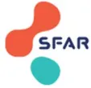
COVID +
Présentielle ou Téléconsultation (selon éligibilité)
Dépistage COVID
Patient II ou IIR durant toute l'hospitalisation
Protection Equipe d'anesthésie (pendant tout le bloc opératoire)
Patient II ou IIR
non-COVID
Présentielle ou Téléconsultation (selon éligibilité)
Dépistage COVID
Patient II ou IIR durant toute l'hospitalisation
Protection Equipe d'anesthésie (Intubation / extubation - gestes à risque d'aérosolisation)
Patient II ou IIR
Signalisation spécifique COVID+
Reportez la chirurgie si possible
Questionnaire Standardisé COVID
Température
Questionnaire standardisé COVID
+/- NFS/PCR
+/- TDM
Consultation Anesthésie
Hospitalisation Filière COVID+
Visite Pré-anesthésie
Bloc opératoire identifié COVID+
Salle interventionnelle armée avec le matériel nécessaire COVID+ (Privilégier ALR si possible)
Extubation en salle
SSPI en salle (ou secteur identifié)
Retour secteur identifié COVID+ (hospitalisation, ambulatoire, soins critiques)
Hospitalisation Filière Non-COVID
Visite Pré-anesthésie
Questionnaire COVID
Température
+/- NFS/PCR
+/- TDM
Bloc opératoire non-COVID
Salle interventionnelle
Extubation en salle
SSPI
Retour secteur dédié Non-COVID (hospitalisation, ambulatoire, soins critiques)
Experts : Alice Blet (Lyon), Anaïs Caillard (Brest), Olivier Joannes-Boyau (Bordeaux), Anne Claire Lukaszewicz (Lyon), Vincent Minville (Toulouse), Sébastien Mirek (Dijon), Bertrand Rozec (Nantes).
R7.1 – Les experts suggèrent de mettre en place dans chaque établissement une cellule de régulation multidisciplinaire hebdomadaire, élargie en fonction des contraintes actuelles, qui établira de façon collégiale le programme opératoire de la semaine suivante selon les critères de priorisation et de programmation des patients (Annexe 14).
Accord FORT
R7.2 – Les experts suggèrent que la cellule de régulation du programme opératoire soit composée de responsables de la chirurgie/des plateaux interventionnels, de l'anesthésie-réanimation et des soins infirmiers du bloc opératoire.
Accord FORT
Argumentaire : Les experts suggèrent la mise en place, dans chaque établissement, d'une cellule de régulation multidisciplinaire des activités chirurgicales élargie en fonction des contraintes liées à la pandémie COVID-19. Cette cellule de régulation doit être décisionnelle sur la production d'un programme opératoire restreint en cohérence avec les autres directives et doit se réunir de façon hebdomadaire. Selon la taille de l'établissement, plusieurs cellules de régulation peuvent exister, coordonnées par une cellule de régulation centrale. La composition de la cellule de régulation doit, au minimum, comprendre les personnes suivantes et se coordonner avec la direction de l'établissement :
Au moment de se réunir, la cellule de régulation devra connaître les capacités de l'établissement en termes de lit d'aval en soins critiques et conventionnel, l'état des stocks des EPI, médicaments et produits sanguins labiles, ainsi que le matériel nécessaire à la réalisation de l'intervention. Les décisions de la cellule de régulation doivent faire l'objet d'une traçabilité et tenir compte des éléments suivants [1, 2] :
La cellule de régulation devra s'assurer des éléments suivants pour augmenter progressivement le volume d'interventions :
Les critères de priorisation des chirurgies à programmer s'appuieront sur :
[1] Joint Statement: Roadmap for Resuming Elective Surgery after COVID-19 Pandemic n.d. https://www.asahq.org/about-asa/newsroom/news-releases/2020/04/joint-statement-on-elective-surgery-after-covid-19-pandemic (accessed April 21, 2020).
[2] Stahel PF. How to risk-stratify elective surgery during the COVID-19 pandemic? Patient Saf Surg 2020 Mar 31;14:8.
[3] Prachand VN, Milner R, Angelos P, Posner MC, Fung JJ, Agrawal N, et al. Medically-Necessary, Time-Sensitive Procedures: A
Scoring System to Ethically and Efficiently Manage Resource Scarcity and Provider Risk During the COVID-19 Pandemic. J Am Coll Surg 2020. Aug;231(2):281-288
[4] Brindle M, Doherty G, Lillemoe K, Gawand A. Approaching surgical triage during the COVID-19 Pandemic. Ann Surg 2020 Aug;272(2):e40-e42
[5] Besnier E, Tuech J-J, Schwarz L. We Asked the Experts: Covid-19 Outbreak: Is There Still a Place for Scheduled Surgery? "Reflection from Pathophysiological Data." World J Surg 2020 Jun;44(6):1695-1698
[6] COVIDSurg Collaborative. Mortality and pulmonary complications in patients undergoing surgery with perioperative SARS-CoV-2 infection: an international cohort study. Lancet 2020 Jul 4;396(10243):27-38.
R7.3 – Les experts suggèrent de réévaluer fréquemment, au sein de chaque établissement, les politiques et les procédures, sur la base des données collectées, des ressources, des essais et des autres informations cliniques liées à la pandémie de COVID-19.
Accord FORT
Argumentaire : Les établissements doivent collecter et utiliser des données pertinentes, complétées par des données provenant des autorités locales et des agences gouvernementales, le cas échéant [1] :
[1] Joint Statement: Roadmap for Resuming Elective Surgery after COVID-19 Pandemic. Disponible à: https://www.asahq.org/about-asa/newsroom/news-releases/2020/04/joint-statement-on-elective-surgery-after-covid-19-pandemic (accessed 12 April 2022).
R7.4–Les experts suggèrent de renforcer le lien avec les patients ayant vu leur intervention reportée et en attente de reprogrammation.
Accord FORT
Argumentaire : Les experts suggèrent de renforcer le lien avec les patients en attente d'une reprogrammation d'une intervention reportée, afin :
ANNEXE 14. Interactions de la cellule de régulation multidisciplinaire (mise à jour d'avril 2022).
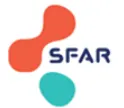
The diagram illustrates the interactions of the multidisciplinary regulation cell (CELLULE DE REGULATION DE L'ACTIVITE CHIRURGICALE) with various stakeholders and processes. The central box represents the regulation cell, managed by an Anesthesiologist-Resuscitator / Surgeon and serving as the Operating Block Regulator. It interacts with:
The central regulation cell also leads to "Programmation" (Scheduling), indicated by a clipboard icon.
ANNEXE 15. Recommandations disponibles à la date du 01/03/2022 émises par les sociétés savantes françaises de chirurgie sur l'organisation de l'activité chirurgicale pendant la pandémie de COVID-19. (*Accès non libre)
 A completely blank white page with no visible content, text, or markings.
A completely blank white page with no visible content, text, or markings.